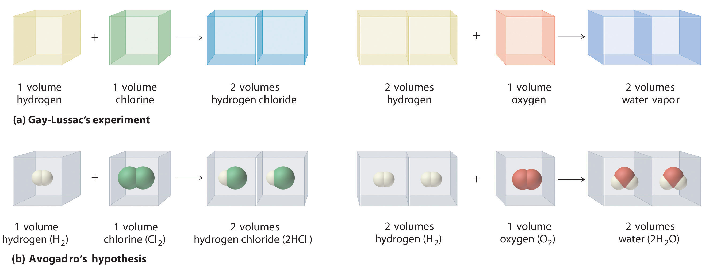
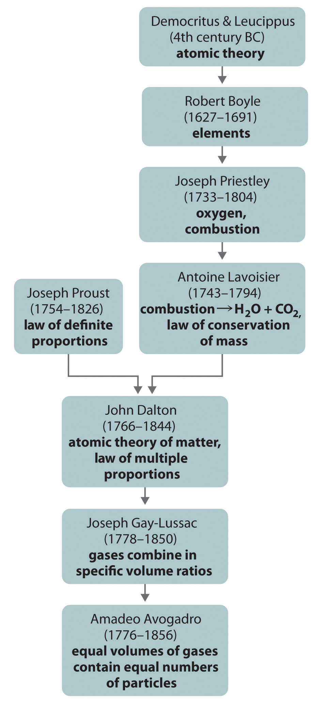
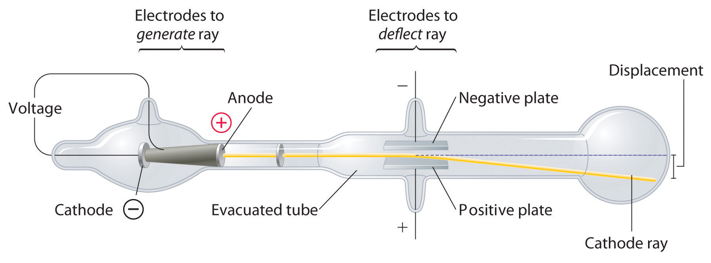
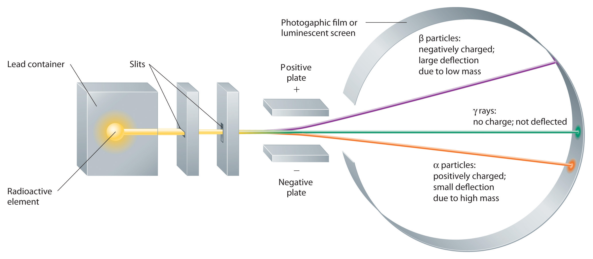
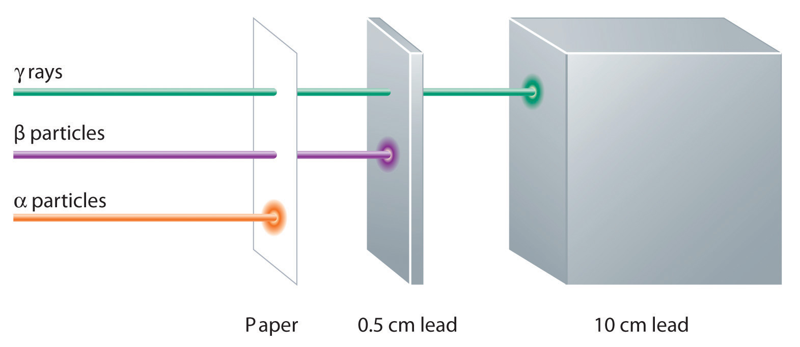
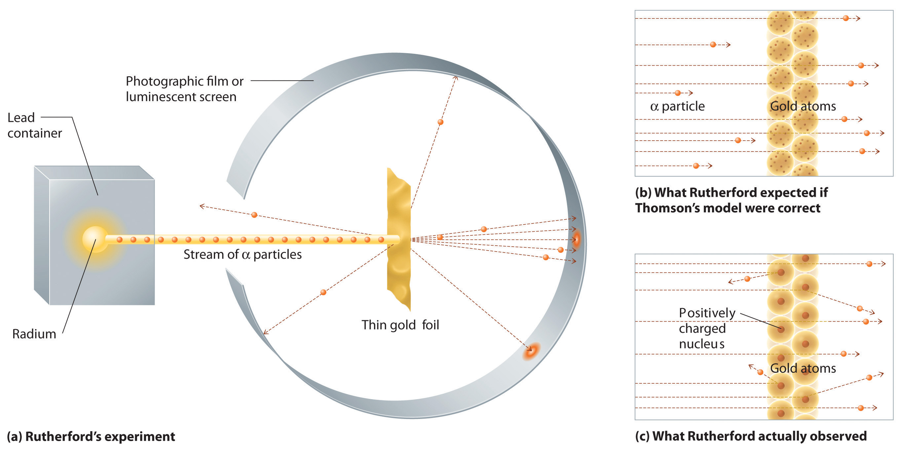
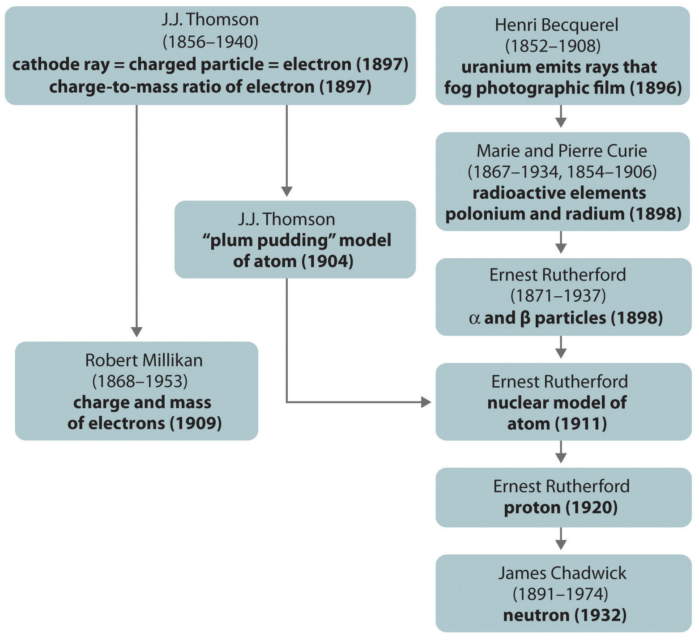
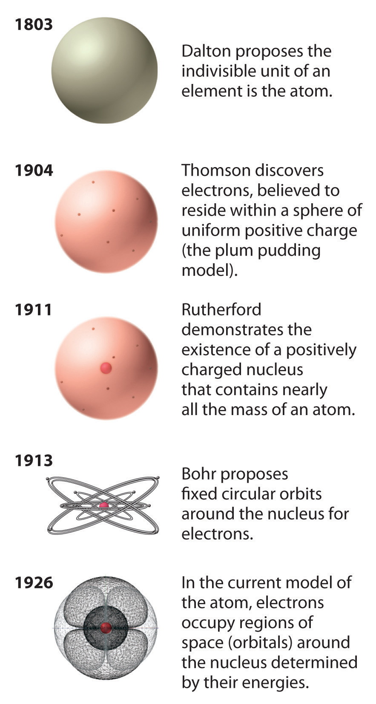
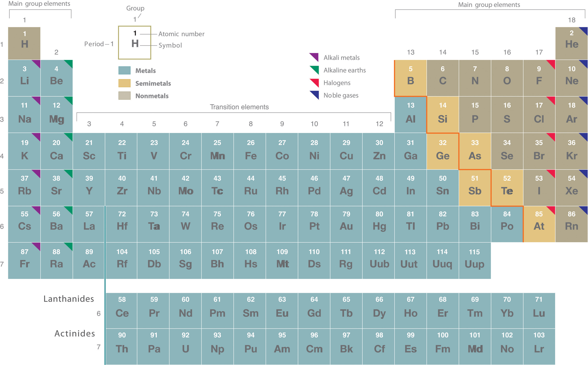

As you begin your study of college chemistry, those of you who do not intend to become professional chemists may well wonder why you need to study chemistry. You will soon discover that a basic understanding of chemistry is useful in a wide range of disciplines and career paths. You will also discover that an understanding of chemistry helps you make informed decisions about many issues that affect you, your community, and your world. A major goal of this text is to demonstrate the importance of chemistry in your daily life and in our collective understanding of both the physical world we occupy and the biological realm of which we are a part. The objectives of this chapter are twofold: (1) to introduce the breadth, the importance, and some of the challenges of modern chemistry and (2) to present some of the fundamental concepts and definitions you will need to understand how chemists think and work.
An atomic corral for electrons. A corral of 48 iron atoms (yellow-orange) on a smooth copper surface (cyan-purple) confines the electrons on the surface of the copper, producing a pattern of “ripples” in the distribution of the electrons. Scientists assembled the 713-picometer-diameter corral by individually positioning iron atoms with the tip of a scanning tunneling microscope. (Note that 1 picometer is equivalent to 1 × 10-12 meters.)
ChemistryThe study of matter and the changes that material substances undergo. is the study of matter and the changes that material substances undergo. Of all the scientific disciplines, it is perhaps the most extensively connected to other fields of study. Geologists who want to locate new mineral or oil deposits use chemical techniques to analyze and identify rock samples. Oceanographers use chemistry to track ocean currents, determine the flux of nutrients into the sea, and measure the rate of exchange of nutrients between ocean layers. Engineers consider the relationships between the structures and the properties of substances when they specify materials for various uses. Physicists take advantage of the properties of substances to detect new subatomic particles. Astronomers use chemical signatures to determine the age and distance of stars and thus answer questions about how stars form and how old the universe is. The entire subject of environmental science depends on chemistry to explain the origin and impacts of phenomena such as air pollution, ozone layer depletion, and global warming.
The disciplines that focus on living organisms and their interactions with the physical world rely heavily on biochemistryThe application of chemistry to the study of biological processes., the application of chemistry to the study of biological processes. A living cell contains a large collection of complex molecules that carry out thousands of chemical reactions, including those that are necessary for the cell to reproduce. Biological phenomena such as vision, taste, smell, and movement result from numerous chemical reactions. Fields such as medicine, pharmacology, nutrition, and toxicology focus specifically on how the chemical substances that enter our bodies interact with the chemical components of the body to maintain our health and well-being. For example, in the specialized area of sports medicine, a knowledge of chemistry is needed to understand why muscles get sore after exercise as well as how prolonged exercise produces the euphoric feeling known as “runner’s high.”
Examples of the practical applications of chemistry are everywhere (Figure 1.1 "Chemistry in Everyday Life"). Engineers need to understand the chemical properties of the substances when designing biologically compatible implants for joint replacements or designing roads, bridges, buildings, and nuclear reactors that do not collapse because of weakened structural materials such as steel and cement. Archaeology and paleontology rely on chemical techniques to date bones and artifacts and identify their origins. Although law is not normally considered a field related to chemistry, forensic scientists use chemical methods to analyze blood, fibers, and other evidence as they investigate crimes. In particular, DNA matching—comparing biological samples of genetic material to see whether they could have come from the same person—has been used to solve many high-profile criminal cases as well as clear innocent people who have been wrongly accused or convicted. Forensics is a rapidly growing area of applied chemistry. In addition, the proliferation of chemical and biochemical innovations in industry is producing rapid growth in the area of patent law. Ultimately, the dispersal of information in all the fields in which chemistry plays a part requires experts who are able to explain complex chemical issues to the public through television, print journalism, the Internet, and popular books.
Figure 1.1 Chemistry in Everyday Life

Although most people do not recognize it, chemistry and chemical compounds are crucial ingredients in almost everything we eat, wear, and use.
By this point, it shouldn’t surprise you to learn that chemistry was essential in explaining a pivotal event in the history of Earth: the disappearance of the dinosaurs. Although dinosaurs ruled Earth for more than 150 million years, fossil evidence suggests that they became extinct rather abruptly approximately 66 million years ago. Proposed explanations for their extinction have ranged from an epidemic caused by some deadly microbe or virus to more gradual phenomena such as massive climate changes. In 1978 Luis Alvarez (a Nobel Prize–winning physicist), the geologist Walter Alvarez (Luis’s son), and their coworkers discovered a thin layer of sedimentary rock formed 66 million years ago that contained unusually high concentrations of iridium, a rather rare metal (part (a) in Figure 1.2 "Evidence for the Asteroid Impact That May Have Caused the Extinction of the Dinosaurs"). This layer was deposited at about the time dinosaurs disappeared from the fossil record. Although iridium is very rare in most rocks, accounting for only 0.0000001% of Earth’s crust, it is much more abundant in comets and asteroids. Because corresponding samples of rocks at sites in Italy and Denmark contained high iridium concentrations, the Alvarezes suggested that the impact of a large asteroid with Earth led to the extinction of the dinosaurs. When chemists analyzed additional samples of 66-million-year-old sediments from sites around the world, all were found to contain high levels of iridium. In addition, small grains of quartz in most of the iridium-containing layers exhibit microscopic cracks characteristic of high-intensity shock waves (part (b) in Figure 1.2 "Evidence for the Asteroid Impact That May Have Caused the Extinction of the Dinosaurs"). These grains apparently originated from terrestrial rocks at the impact site, which were pulverized on impact and blasted into the upper atmosphere before they settled out all over the world.
Figure 1.2 Evidence for the Asteroid Impact That May Have Caused the Extinction of the Dinosaurs

(a) Luis and Walter Alvarez are standing in front of a rock formation in Italy that shows the thin white layer of iridium-rich clay deposited at the time the dinosaurs became extinct. The concentration of iridium is 30 times higher in this layer than in the rocks immediately above and below it. There are no significant differences between the clay layer and the surrounding rocks in the concentrations of any of the 28 other elements examined. (b) Microphotographs of an unshocked quartz grain (left) and a quartz grain from the iridium-rich layer exhibiting microscopic cracks resulting from shock (right).
Scientists calculate that a collision of Earth with a stony asteroid about 10 kilometers (6 miles) in diameter, traveling at 25 kilometers per second (about 56,000 miles per hour), would almost instantaneously release energy equivalent to the explosion of about 100 million megatons of TNT (trinitrotoluene). This is more energy than that stored in the entire nuclear arsenal of the world. The energy released by such an impact would set fire to vast areas of forest, and the smoke from the fires and the dust created by the impact would block the sunlight for months or years, eventually killing virtually all green plants and most organisms that depend on them. This could explain why about 70% of all species—not just dinosaurs—disappeared at the same time. Scientists also calculate that this impact would form a crater at least 125 kilometers (78 miles) in diameter. Recently, satellite images from a Space Shuttle mission confirmed that a huge asteroid or comet crashed into Earth’s surface across the Yucatan’s northern tip in the Gulf of Mexico 65 million years ago, leaving a partially submerged crater 180 kilometers (112 miles) in diameter (Figure 1.3 "Asteroid Impact"). Thus simple chemical measurements of the abundance of one element in rocks led to a new and dramatic explanation for the extinction of the dinosaurs. Though still controversial, this explanation is supported by additional evidence, much of it chemical.
Figure 1.3 Asteroid Impact

The location of the asteroid impact crater near what is now the tip of the Yucatan Peninsula in Mexico.
This is only one example of how chemistry has been applied to an important scientific problem. Other chemical applications and explanations that we will discuss in this text include how astronomers determine the distance of galaxies and how fish can survive in subfreezing water under polar ice sheets. We will also consider ways in which chemistry affects our daily lives: the addition of iodine to table salt; the development of more effective drugs to treat diseases such as cancer, AIDS (acquired immunodeficiency syndrome), and arthritis; the retooling of industry to use nonchlorine-containing refrigerants, propellants, and other chemicals to preserve Earth’s ozone layer; the use of modern materials in engineering; current efforts to control the problems of acid rain and global warming; and the awareness that our bodies require small amounts of some chemical substances that are toxic when ingested in larger doses. By the time you finish this text, you will be able to discuss these kinds of topics knowledgeably, either as a beginning scientist who intends to spend your career studying such problems or as an informed observer who is able to participate in public debates that will certainly arise as society grapples with scientific issues.
Chemistry is the study of matter and the changes material substances undergo. It is essential for understanding much of the natural world and central to many other scientific disciplines, including astronomy, geology, paleontology, biology, and medicine.
Scientists search for answers to questions and solutions to problems by using a procedure called the scientific methodThe procedure that scientists use to search for answers to questions and solutions to problems.. This procedure consists of making observations, formulating hypotheses, and designing experiments, which in turn lead to additional observations, hypotheses, and experiments in repeated cycles (Figure 1.4 "The Scientific Method").
Figure 1.4 The Scientific Method

As depicted in this flowchart, the scientific method consists of making observations, formulating hypotheses, and designing experiments. A scientist may enter the cycle at any point.
Observations can be qualitative or quantitative. Qualitative observations describe properties or occurrences in ways that do not rely on numbers. Examples of qualitative observations include the following: the outside air temperature is cooler during the winter season, table salt is a crystalline solid, sulfur crystals are yellow, and dissolving a penny in dilute nitric acid forms a blue solution and a brown gas. Quantitative observations are measurements, which by definition consist of both a number and a unit. Examples of quantitative observations include the following: the melting point of crystalline sulfur is 115.21 degrees Celsius, and 35.9 grams of table salt—whose chemical name is sodium chloride—dissolve in 100 grams of water at 20 degrees Celsius. For the question of the dinosaurs’ extinction, the initial observation was quantitative: iridium concentrations in sediments dating to 66 million years ago were 20–160 times higher than normal.
After deciding to learn more about an observation or a set of observations, scientists generally begin an investigation by forming a hypothesisA tentative explanation for scientific observations that puts the system being studied into a form that can be tested., a tentative explanation for the observation(s). The hypothesis may not be correct, but it puts the scientist’s understanding of the system being studied into a form that can be tested. For example, the observation that we experience alternating periods of light and darkness corresponding to observed movements of the sun, moon, clouds, and shadows is consistent with either of two hypotheses: (1) Earth rotates on its axis every 24 hours, alternately exposing one side to the sun, or (2) the sun revolves around Earth every 24 hours. Suitable experiments can be designed to choose between these two alternatives. For the disappearance of the dinosaurs, the hypothesis was that the impact of a large extraterrestrial object caused their extinction. Unfortunately (or perhaps fortunately), this hypothesis does not lend itself to direct testing by any obvious experiment, but scientists can collect additional data that either support or refute it.
After a hypothesis has been formed, scientists conduct experiments to test its validity. ExperimentsA systematic observation or measurement, preferably made under controlled conditions—that is, conditions in which the variable of interest is clearly distinguished from any others. are systematic observations or measurements, preferably made under controlled conditions—that is, under conditions in which a single variable changes. For example, in our extinction scenario, iridium concentrations were measured worldwide and compared. A properly designed and executed experiment enables a scientist to determine whether the original hypothesis is valid. Experiments often demonstrate that the hypothesis is incorrect or that it must be modified. More experimental data are then collected and analyzed, at which point a scientist may begin to think that the results are sufficiently reproducible (i.e., dependable) to merit being summarized in a lawA verbal or mathematical description of a phenomenon that allows for general predictions and says what happens, not why it happens., a verbal or mathematical description of a phenomenon that allows for general predictions. A law simply says what happens; it does not address the question of why. One example of a law, the law of definite proportionsA chemical substance always contains the same proportions of elements by mass., which was discovered by the French scientist Joseph Proust (1754–1826), states that a chemical substance always contains the same proportions of elements by mass. Thus sodium chloride (table salt) always contains the same proportion by mass of sodium to chlorine, in this case 39.34% sodium and 60.66% chlorine by mass, and sucrose (table sugar) is always 42.11% carbon, 6.48% hydrogen, and 51.41% oxygen by mass.You will learn in Chapter 12 "Solids" that some solid compounds do not strictly obey the law of definite proportions. (For a review of common units of measurement, see Essential Skills 1 in Section 1.9 "Essential Skills 1".) The law of definite proportions should seem obvious—we would expect the composition of sodium chloride to be consistent—but the head of the US Patent Office did not accept it as a fact until the early 20th century.
Whereas a law states only what happens, a theoryA statement that attempts to explain why nature behaves the way it does. attempts to explain why nature behaves as it does. Laws are unlikely to change greatly over time unless a major experimental error is discovered. In contrast, a theory, by definition, is incomplete and imperfect, evolving with time to explain new facts as they are discovered. The theory developed to explain the extinction of the dinosaurs, for example, is that Earth occasionally encounters small- to medium-sized asteroids, and these encounters may have unfortunate implications for the continued existence of most species. This theory is by no means proven, but it is consistent with the bulk of evidence amassed to date. Figure 1.5 "A Summary of How the Scientific Method Was Used in Developing the Asteroid Impact Theory to Explain the Disappearance of the Dinosaurs from Earth" summarizes the application of the scientific method in this case.
Figure 1.5 A Summary of How the Scientific Method Was Used in Developing the Asteroid Impact Theory to Explain the Disappearance of the Dinosaurs from Earth

Classify each statement as a law, a theory, an experiment, a hypothesis, a qualitative observation, or a quantitative observation.
Given: components of the scientific method
Asked for: statement classification
Strategy:
Refer to the definitions in this section to determine which category best describes each statement.
Solution:
Exercise
Classify each statement as a law, a theory, an experiment, a hypothesis, a qualitative observation, or a quantitative observation.
Answer:
Because scientists can enter the cycle shown in Figure 1.4 "The Scientific Method" at any point, the actual application of the scientific method to different topics can take many different forms. For example, a scientist may start with a hypothesis formed by reading about work done by others in the field, rather than by making direct observations.
It is important to remember that scientists have a tendency to formulate hypotheses in familiar terms simply because it is difficult to propose something that has never been encountered or imagined before. As a result, scientists sometimes discount or overlook unexpected findings that disagree with the basic assumptions behind the hypothesis or theory being tested. Fortunately, truly important findings are immediately subject to independent verification by scientists in other laboratories, so science is a self-correcting discipline. When the Alvarezes originally suggested that an extraterrestrial impact caused the extinction of the dinosaurs, the response was almost universal skepticism and scorn. In only 20 years, however, the persuasive nature of the evidence overcame the skepticism of many scientists, and their initial hypothesis has now evolved into a theory that has revolutionized paleontology and geology.
In Section 1.3 "A Description of Matter", we begin our discussion of chemistry with a description of matter. This discussion is followed by a summary of some of the pioneering discoveries that led to our present understanding of the structure of the fundamental unit of chemistry: the atom.
Chemists expand their knowledge by making observations, carrying out experiments, and testing hypotheses to develop laws to summarize their results and theories to explain them. In doing so, they are using the scientific method.
What are the three components of the scientific method? Is it necessary for an individual to conduct experiments to follow the scientific method?
Identify each statement as a theory or a law and explain your reasoning.
Identify each statement as a theory or a law and explain your reasoning.
Classify each statement as a qualitative observation or a quantitative observation.
Classify each statement as a quantitative observation or a qualitative observation.
Chemists study the structures, physical properties, and chemical properties of material substances. These consist of matterAnything that occupies space and has mass., which is anything that occupies space and has mass. Gold and iridium are matter, as are peanuts, people, and postage stamps. Smoke, smog, and laughing gas are matter. Energy, light, and sound, however, are not matter; ideas and emotions are also not matter.
The massA fundamental property that does not depend on an object’s location; it is the quantity of matter an object contains. of an object is the quantity of matter it contains. Do not confuse an object’s mass with its weightA force caused by the gravitational attraction that operates on an object. The weight of an object depends on its location (c.f. mass)., which is a force caused by the gravitational attraction that operates on the object. Mass is a fundamental property of an object that does not depend on its location.In physical terms, the mass of an object is directly proportional to the force required to change its speed or direction. A more detailed discussion of the differences between weight and mass and the units used to measure them is included in Essential Skills 1 (Section 1.9 "Essential Skills 1"). Weight, on the other hand, depends on the location of an object. An astronaut whose mass is 95 kg weighs about 210 lb on Earth but only about 35 lb on the moon because the gravitational force he or she experiences on the moon is approximately one-sixth the force experienced on Earth. For practical purposes, weight and mass are often used interchangeably in laboratories. Because the force of gravity is considered to be the same everywhere on Earth’s surface, 2.2 lb (a weight) equals 1.0 kg (a mass), regardless of the location of the laboratory on Earth.
Under normal conditions, there are three distinct states of matter: solids, liquids, and gases (Figure 1.6 "The Three States of Matter"). SolidsOne of three distinct states of matter that, under normal conditions, is relatively rigid and has a fixed volume. are relatively rigid and have fixed shapes and volumes. A rock, for example, is a solid. In contrast, liquidsOne of three distinct states of matter that, under normal conditons, has a fixed volume but flows to assume the shape of its container. have fixed volumes but flow to assume the shape of their containers, such as a beverage in a can. GasesOne of three distinct states of matter that, under normal conditions, has neither a fixed shape nor a fixed volume and expands to completely fill its container., such as air in an automobile tire, have neither fixed shapes nor fixed volumes and expand to completely fill their containers. Whereas the volume of gases strongly depends on their temperature and pressureThe amount of force exerted on a given area. (the amount of force exerted on a given area), the volumes of liquids and solids are virtually independent of temperature and pressure. Matter can often change from one physical state to another in a process called a physical changeA change of state that does not affect the chemical composition of a substance.. For example, liquid water can be heated to form a gas called steam, or steam can be cooled to form liquid water. However, such changes of state do not affect the chemical composition of the substance.
Figure 1.6 The Three States of Matter

Solids have a defined shape and volume. Liquids have a fixed volume but flow to assume the shape of their containers. Gases completely fill their containers, regardless of volume.
A pure chemical substance is any matter that has a fixed chemical composition and characteristic properties. Oxygen, for example, is a pure chemical substance that is a colorless, odorless gas at 25°C. Very few samples of matter consist of pure substances; instead, most are mixturesA combination of two or more pure substances in variable proportions in which the individual substances retain their respective identities., which are combinations of two or more pure substances in variable proportions in which the individual substances retain their identity. Air, tap water, milk, blue cheese, bread, and dirt are all mixtures. If all portions of a material are in the same state, have no visible boundaries, and are uniform throughout, then the material is homogeneousA mixture in which all portions of a material are in the same state, have no visible boundaries, and are uniform throughout.. Examples of homogeneous mixtures are the air we breathe and the tap water we drink. Homogeneous mixtures are also called solutions. Thus air is a solution of nitrogen, oxygen, water vapor, carbon dioxide, and several other gases; tap water is a solution of small amounts of several substances in water. The specific compositions of both of these solutions are not fixed, however, but depend on both source and location; for example, the composition of tap water in Boise, Idaho, is not the same as the composition of tap water in Buffalo, New York. Although most solutions we encounter are liquid, solutions can also be solid. The gray substance still used by some dentists to fill tooth cavities is a complex solid solution that contains 50% mercury and 50% of a powder that contains mostly silver, tin, and copper, with small amounts of zinc and mercury. Solid solutions of two or more metals are commonly called alloys.
If the composition of a material is not completely uniform, then it is heterogeneousA mixture in which a material is not completely uniform throughout. (e.g., chocolate chip cookie dough, blue cheese, and dirt). Mixtures that appear to be homogeneous are often found to be heterogeneous after microscopic examination. Milk, for example, appears to be homogeneous, but when examined under a microscope, it clearly consists of tiny globules of fat and protein dispersed in water (Figure 1.7 "A Heterogeneous Mixture"). The components of heterogeneous mixtures can usually be separated by simple means. Solid-liquid mixtures such as sand in water or tea leaves in tea are readily separated by filtration, which consists of passing the mixture through a barrier, such as a strainer, with holes or pores that are smaller than the solid particles. In principle, mixtures of two or more solids, such as sugar and salt, can be separated by microscopic inspection and sorting. More complex operations are usually necessary, though, such as when separating gold nuggets from river gravel by panning. First solid material is filtered from river water; then the solids are separated by inspection. If gold is embedded in rock, it may have to be isolated using chemical methods.
Figure 1.7 A Heterogeneous Mixture

Under a microscope, whole milk is actually a heterogeneous mixture composed of globules of fat and protein dispersed in water.
Homogeneous mixtures (solutions) can be separated into their component substances by physical processes that rely on differences in some physical property, such as differences in their boiling points. Two of these separation methods are distillation and crystallization. DistillationA physical process used to separate homogeneous mixtures (solutions) into their component substances. Distillation makes use of differences in the volatilities of the component substances. makes use of differences in volatility, a measure of how easily a substance is converted to a gas at a given temperature. Figure 1.8 "The Distillation of a Solution of Table Salt in Water" shows a simple distillation apparatus for separating a mixture of substances, at least one of which is a liquid. The most volatile component boils first and is condensed back to a liquid in the water-cooled condenser, from which it flows into the receiving flask. If a solution of salt and water is distilled, for example, the more volatile component, pure water, collects in the receiving flask, while the salt remains in the distillation flask.
Figure 1.8 The Distillation of a Solution of Table Salt in Water

The solution of salt in water is heated in the distilling flask until it boils. The resulting vapor is enriched in the more volatile component (water), which condenses to a liquid in the cold condenser and is then collected in the receiving flask.
Mixtures of two or more liquids with different boiling points can be separated with a more complex distillation apparatus. One example is the refining of crude petroleum into a range of useful products: aviation fuel, gasoline, kerosene, diesel fuel, and lubricating oil (in the approximate order of decreasing volatility). Another example is the distillation of alcoholic spirits such as brandy or whiskey. This relatively simple procedure caused more than a few headaches for federal authorities in the 1920s during the era of Prohibition, when illegal stills proliferated in remote regions of the United States.
CrystallizationA physical process used to separate homogeneous mixtures (solutions) into their component substances. Crystallization separates mixtures based on differences in their solubilities. separates mixtures based on differences in solubility, a measure of how much solid substance remains dissolved in a given amount of a specified liquid. Most substances are more soluble at higher temperatures, so a mixture of two or more substances can be dissolved at an elevated temperature and then allowed to cool slowly. Alternatively, the liquid, called the solvent, may be allowed to evaporate. In either case, the least soluble of the dissolved substances, the one that is least likely to remain in solution, usually forms crystals first, and these crystals can be removed from the remaining solution by filtration. Figure 1.9 "The Crystallization of Sodium Acetate from a Concentrated Solution of Sodium Acetate in Water" dramatically illustrates the process of crystallization.
Figure 1.9 The Crystallization of Sodium Acetate from a Concentrated Solution of Sodium Acetate in Water

The addition of a small “seed” crystal (a) causes the compound to form white crystals, which grow and eventually occupy most of the flask (b).
Most mixtures can be separated into pure substances, which may be either elements or compounds. An elementA pure substance that cannot be broken down into a simpler substance by chemical changes., such as gray, metallic sodium, is a substance that cannot be broken down into simpler ones by chemical changes; a compoundA pure substance that contains two or more elements and has chemical and physical properties that are usually different from those of the elements of which it is composed., such as white, crystalline sodium chloride, contains two or more elements and has chemical and physical properties that are usually different from those of the elements of which it is composed. With only a few exceptions, a particular compound has the same elemental composition (the same elements in the same proportions) regardless of its source or history. The chemical composition of a substance is altered in a process called a chemical changeA process in which the chemical composition of one or more substances is altered.. The conversion of two or more elements, such as sodium and chlorine, to a chemical compound, sodium chloride, is an example of a chemical change, often called a chemical reaction. Currently, about 115 elements are known, but millions of chemical compounds have been prepared from these 115 elements. The known elements are listed in the periodic table (see Chapter 32 "Appendix H: Periodic Table of Elements").
In general, a reverse chemical process breaks down compounds into their elements. For example, water (a compound) can be decomposed into hydrogen and oxygen (both elements) by a process called electrolysis. In electrolysis, electricity provides the energy needed to separate a compound into its constituent elements (Figure 1.10 "The Decomposition of Water to Hydrogen and Oxygen by Electrolysis"). A similar technique is used on a vast scale to obtain pure aluminum, an element, from its ores, which are mixtures of compounds. Because a great deal of energy is required for electrolysis, the cost of electricity is by far the greatest expense incurred in manufacturing pure aluminum. Thus recycling aluminum is both cost-effective and ecologically sound.
Figure 1.10 The Decomposition of Water to Hydrogen and Oxygen by Electrolysis

Water is a chemical compound; hydrogen and oxygen are elements.
The overall organization of matter and the methods used to separate mixtures are summarized in Figure 1.11 "Relationships between the Types of Matter and the Methods Used to Separate Mixtures".
Figure 1.11 Relationships between the Types of Matter and the Methods Used to Separate Mixtures

Identify each substance as a compound, an element, a heterogeneous mixture, or a homogeneous mixture (solution).
Given: a chemical substance
Asked for: its classification
Strategy:
A Decide whether a substance is chemically pure. If it is pure, the substance is either an element or a compound. If a substance can be separated into its elements, it is a compound.
B If a substance is not chemically pure, it is either a heterogeneous mixture or a homogeneous mixture. If its composition is uniform throughout, it is a homogeneous mixture.
Solution:
Exercise
Identify each substance as a compound, an element, a heterogeneous mixture, or a homogeneous mixture (solution).
Answer:
All matter has physical and chemical properties. Physical propertiesA characteristic that scientists can measure without changing the composition of a sample under study. are characteristics that scientists can measure without changing the composition of the sample under study, such as mass, color, and volume (the amount of space occupied by a sample). Chemical propertiesThe characteristic ability of a substance to react to form new substances. describe the characteristic ability of a substance to react to form new substances; they include its flammability and susceptibility to corrosion. All samples of a pure substance have the same chemical and physical properties. For example, pure copper is always a reddish-brown solid (a physical property) and always dissolves in dilute nitric acid to produce a blue solution and a brown gas (a chemical property).
Physical properties can be extensive or intensive. Extensive propertiesA physical property that varies with the amount of a substance. vary with the amount of the substance and include mass, weight, and volume. Intensive propertiesA physical property that does not depend on the amount of the substance and physical state at a given temperature and pressure., in contrast, do not depend on the amount of the substance; they include color, melting point, boiling point, electrical conductivity, and physical state at a given temperature. For example, elemental sulfur is a yellow crystalline solid that does not conduct electricity and has a melting point of 115.2°C, no matter what amount is examined (Figure 1.12 "The Difference between Extensive and Intensive Properties of Matter"). Scientists commonly measure intensive properties to determine a substance’s identity, whereas extensive properties convey information about the amount of the substance in a sample.
Figure 1.12 The Difference between Extensive and Intensive Properties of Matter

Because they differ in size, the two samples of sulfur have different extensive properties, such as mass and volume. In contrast, their intensive properties, including color, melting point, and electrical conductivity, are identical.
Although mass and volume are both extensive properties, their ratio is an important intensive property called density (d)An intensive property of matter, density is the mass per unit volume (usually expressed in g/cm3). At a given temperature, the density of a substance is a constant.. Density is defined as mass per unit volume and is usually expressed in grams per cubic centimeter (g/cm3). As mass increases in a given volume, density also increases. For example, lead, with its greater mass, has a far greater density than the same volume of air, just as a brick has a greater density than the same volume of Styrofoam. At a given temperature and pressure, the density of a pure substance is a constant:
Equation 1.1
Pure water, for example, has a density of 0.998 g/cm3 at 25°C.
The average densities of some common substances are in Table 1.1 "Densities of Common Substances". Notice that corn oil has a lower mass to volume ratio than water. This means that when added to water, corn oil will “float.” Example 3 shows how density measurements can be used to identify pure substances.
Table 1.1 Densities of Common Substances
| Substance | Density at 25°C (g/cm3) |
|---|---|
| blood | 1.035 |
| body fat | 0.918 |
| whole milk | 1.030 |
| corn oil | 0.922 |
| mayonnaise | 0.910 |
| honey | 1.420 |
The densities of some common liquids are in Table 1.2 "Densities of Liquids in Example 3". Imagine you have five bottles containing colorless liquids (labeled A–E). You must identify them by measuring the density of each. Using a pipette, a laboratory instrument for accurately measuring and transferring liquids, you carefully measure 25.00 mL of each liquid into five beakers of known mass (1 mL = 1 cm3). You then weigh each sample on a laboratory balance. Use the tabulated data to calculate the density of each sample. Based solely on your results, can you unambiguously identify all five liquids?If necessary, review the use of significant figures in calculations in Essential Skills 1 (Section 1.9 "Essential Skills 1") prior to working this example.
Masses of samples: A, 17.72 g; B, 19.75 g; C, 24.91 g; D, 19.65 g; E, 27.80 g
Table 1.2 Densities of Liquids in Example 3
| Substance | Density at 25°C (g/cm3) |
|---|---|
| water | 0.998 |
| ethanol (the alcohol in beverages) | 0.789 |
| methanol (wood alcohol) | 0.792 |
| ethylene glycol (used in antifreeze) | 1.113 |
| diethyl ether (“ether”; once widely used as an anesthetic) | 0.708 |
| isopropanol (rubbing alcohol) | 0.785 |
Given: volume and mass
Asked for: density
Strategy:
A Calculate the density of each liquid from the volumes and masses given.
B Check to make sure that your answer makes sense.
C Compare each calculated density with those given in Table 1.2 "Densities of Liquids in Example 3". If the calculated density of a liquid is not significantly different from that of one of the liquids given in the table, then the unknown liquid is most likely the corresponding liquid.
D If none of the reported densities corresponds to the calculated density, then the liquid cannot be unambiguously identified.
Solution:
A Density is mass per unit volume and is usually reported in grams per cubic centimeter (or grams per milliliter because 1 mL = 1 cm3). The masses of the samples are given in grams, and the volume of all the samples is 25.00 mL (= 25.00 cm3). The density of each sample is calculated by dividing the mass by its volume (Equation 1.1). The density of sample A, for example, is
Both the volume and the mass are given to four significant figures, so four significant figures are permitted in the result. (See Essential Skills 1, Section 1.9 "Essential Skills 1", for a discussion of significant figures.) The densities of the other samples (in grams per cubic centimeter) are as follows: B, 0.7900; C, 0.9964; D, 0.7860; and E, 1.112.
B Except for sample E, the calculated densities are slightly less than 1 g/cm3. This makes sense because the masses (in grams) of samples A–D are all slightly less than the volume of the samples, 25.00 mL. In contrast, the mass of sample E is slightly greater than 25 g, so its density must be somewhat greater than 1 g/cm3.
C Comparing these results with the data given in Table 1.2 "Densities of Liquids in Example 3" shows that sample A is probably diethyl ether (0.708 g/cm3 and 0.7088 g/cm3 are not substantially different), sample C is probably water (0.998 g/cm3 in the table versus 0.9964 g/cm3 measured), and sample E is probably ethylene glycol (1.113 g/cm3 in the table versus 1.112 g/cm3 measured).
D Samples B and D are more difficult to identify for two reasons: (1) Both have similar densities (0.7900 and 0.7860 g/cm3), so they may or may not be chemically identical. (2) Within experimental error, the measured densities of B and D are indistinguishable from the densities of ethanol (0.789 g/cm3), methanol (0.792 g/cm3), and isopropanol (0.785 g/cm3). Thus some property other than density must be used to identify each sample.
Exercise
Given the volumes and masses of five samples of compounds used in blending gasoline, together with the densities of several chemically pure liquids, identify as many of the samples as possible.
| Sample | Volume (mL) | Mass (g) |
|---|---|---|
| A | 337 | 250.0 |
| B | 972 | 678.1 |
| C | 243 | 190.9 |
| D | 119 | 103.2 |
| E | 499 | 438.7 |
| Substance | Density (g/cm3) |
|---|---|
| benzene | 0.8787 |
| toluene | 0.8669 |
| m-xylene | 0.8684 |
| isooctane | 0.6979 |
| methyl t-butyl ether | 0.7405 |
| t-butyl alcohol | 0.7856 |
Answer: A, methyl t-butyl ether; B, isooctane; C, t-butyl alcohol; D, toluene or m-xylene; E, benzene
Matter is anything that occupies space and has mass. The three states of matter are solid, liquid, and gas. A physical change involves the conversion of a substance from one state of matter to another, without changing its chemical composition. Most matter consists of mixtures of pure substances, which can be homogeneous (uniform in composition) or heterogeneous (different regions possess different compositions and properties). Pure substances can be either chemical compounds or elements. Compounds can be broken down into elements by chemical reactions, but elements cannot be separated into simpler substances by chemical means. The properties of substances can be classified as either physical or chemical. Scientists can observe physical properties without changing the composition of the substance, whereas chemical properties describe the tendency of a substance to undergo chemical changes (chemical reactions) that change its chemical composition. Physical properties can be intensive or extensive. Intensive properties are the same for all samples; do not depend on sample size; and include, for example, color, physical state, and melting and boiling points. Extensive properties depend on the amount of material and include mass and volume. The ratio of two extensive properties, mass and volume, is an important intensive property called density.
Please be sure you are familiar with the topics discussed in Essential Skills 1 (Section 1.9 "Essential Skills 1") before proceeding to the Conceptual Problems.
What is the difference between mass and weight? Is the mass of an object on Earth the same as the mass of the same object on Jupiter? Why or why not?
Is it accurate to say that a substance with a mass of 1 kg weighs 2.2 lb? Why or why not?
What factor must be considered when reporting the weight of an object as opposed to its mass?
Construct a table with the headings “Solid,” “Liquid,” and “Gas.” For any given substance, state what you expect for each of the following:
Classify each substance as homogeneous or heterogeneous and explain your reasoning.
Classify each substance as homogeneous or heterogeneous and explain your reasoning.
Classify each substance as a pure substance or a mixture and explain your reasoning.
Classify each substance as a pure substance or a mixture.
Classify each substance as an element or a compound.
Classify each substance as an element or a compound.
What techniques could be used to separate each of the following?
What techniques could be used to separate each of the following?
Match each separation technique in (a) with the physical/chemical property that each takes advantage of in (b).
The following figures illustrate the arrangement of atoms in some samples of matter. Which figures are related by a physical change? By a chemical change?

Classify each statement as an extensive property or an intensive property.
Classify each statement as a physical property or a chemical property.
Please be sure you are familiar with the topics discussed in Essential Skills 1 (Section 1.9 "Essential Skills 1") before proceeding to the Numerical Problems.
If a person weighs 176 lb on Earth, what is his or her mass on Mars, where the force of gravity is 37% of that on Earth?
If a person weighs 135 lb on Earth, what is his or her mass on Jupiter, where the force of gravity is 236% of that on Earth?
Calculate the volume of 10.00 g of each element and then arrange the elements in order of decreasing volume. The numbers in parentheses are densities.
Given 15.00 g of each element, calculate the volume of each and then arrange the elements in order of increasing volume. The numbers in parentheses are densities.
A silver bar has dimensions of 10.00 cm × 4.00 cm × 1.50 cm, and the density of silver is 10.49 g/cm3. What is the mass of the bar?
Platinum has a density of 21.45 g/cm3. What is the mass of a platinum bar measuring 3.00 cm × 1.50 cm × 0.500 cm?
Complete the following table.
| Density (g/cm3) | Mass (g) | Volume (cm3) | Element |
|---|---|---|---|
| 3.14 | 79.904 | Br | |
| 3.51 | 3.42 | C | |
| 39.1 | 45.5 | K | |
| 11.34 | 207.2 | Pb | |
| 107.868 | 10.28 | Ag | |
| 6.51 | 14.0 | Zr |
Gold has a density of 19.30 g/cm3. If a person who weighs 85.00 kg (1 kg = 1000 g) were given his or her weight in gold, what volume (in cm3) would the gold occupy? Are we justified in using the SI unit of mass for the person’s weight in this case?
An irregularly shaped piece of magnesium with a mass of 11.81 g was dropped into a graduated cylinder partially filled with water. The magnesium displaced 6.80 mL of water. What is the density of magnesium?
The density of copper is 8.92 g/cm3. If a 10.00 g sample is placed in a graduated cylinder that contains 15.0 mL of water, what is the total volume that would be occupied?
At 20°C, the density of fresh water is 0.9982 kg/m3, and the density of seawater is 1.025 kg/m3. Will a ship float higher in fresh water or in seawater? Explain your reasoning.
Unlike weight, mass does not depend on location. The mass of the person is therefore the same on Earth and Mars: 176 lb ÷ 2.2 lb/kg = 80 kg.
Volume decreases: Ca > Ti > Cu > Ir
629 g
1.74 g/cm3
It was not until the era of the ancient Greeks that we have any record of how people tried to explain the chemical changes they observed and used. At that time, natural objects were thought to consist of only four basic elements: earth, air, fire, and water. Then, in the fourth century BC, two Greek philosophers, Democritus and Leucippus, suggested that matter was not infinitely divisible into smaller particles but instead consisted of fundamental, indivisible particles called atomsThe fundamental, individual particles of which matter is composed.. Unfortunately, these early philosophers did not have the technology to test their hypothesis. They would have been unlikely to do so in any case because the ancient Greeks did not conduct experiments or use the scientific method. They believed that the nature of the universe could be discovered by rational thought alone.
Over the next two millennia, alchemists, who engaged in a form of chemistry and speculative philosophy during the Middle Ages and Renaissance, achieved many advances in chemistry. Their major goal was to convert certain elements into others by a process they called transmutationThe process of converting one element to another. (Figure 1.13 "An Alchemist at Work"). In particular, alchemists wanted to find a way to transform cheaper metals into gold. Although most alchemists did not approach chemistry systematically and many appear to have been outright frauds, alchemists in China, the Arab kingdoms, and medieval Europe made major contributions, including the discovery of elements such as quicksilver (mercury) and the preparation of several strong acids.
Figure 1.13 An Alchemist at Work
Alchemy was a form of chemistry that flourished during the Middle Ages and Renaissance. Although some alchemists were frauds, others made major contributions, including the discovery of several elements and the preparation of strong acids.
The 16th and 17th centuries saw the beginnings of what we now recognize as modern chemistry. During this period, great advances were made in metallurgy, the extraction of metals from ores, and the first systematic quantitative experiments were carried out. In 1661, the Englishman Robert Boyle (1627–91) published The Sceptical Chymist, which described the relationship between the pressure and the volume of air. More important, Boyle defined an element as a substance that cannot be broken down into two or more simpler substances by chemical means. This led to the identification of a large number of elements, many of which were metals. Ironically, Boyle himself never thought that metals were elements.
In the 18th century, the English clergyman Joseph Priestley (1733–1804) discovered oxygen gas and found that many carbon-containing materials burn vigorously in an oxygen atmosphere, a process called combustionThe burning of a material in an oxygen atmosphere.. Priestley also discovered that the gas produced by fermenting beer, which we now know to be carbon dioxide, is the same as one of the gaseous products of combustion. Priestley’s studies of this gas did not continue as he would have liked, however. After he fell into a vat of fermenting beer, brewers prohibited him from working in their factories. Although Priestley did not understand its identity, he found that carbon dioxide dissolved in water to produce seltzer water. In essence, he may be considered the founder of the multibillion-dollar carbonated soft drink industry.
Priestley was a political theorist and a leading Unitarian minister. He was appointed to Warrington Academy in Lancashire, England, where he developed new courses on history, science, and the arts. During visits to London, Priestley met the leading men of science, including Benjamin Franklin, who encouraged Priestley’s interest in electricity. Priestley’s work on gases began while he was living next to a brewery in Leeds, where he noticed “fixed air” bubbling out of vats of fermenting beer and ale. His scientific discoveries included the relationship between electricity and chemical change, 10 new “airs,” and observations that led to the discovery of photosynthesis. Due to his support for the principles of the French Revolution, Priestley’s house, library, and laboratory were destroyed by a mob in 1791. He and his wife emigrated to the United States in 1794 to join their three sons, who had previously emigrated to Pennsylvania. Priestley never returned to England and died in his new home in Pennsylvania.
Despite the pioneering studies of Priestley and others, a clear understanding of combustion remained elusive. In the late 18th century, however, the French scientist Antoine Lavoisier (1743–94) showed that combustion is the reaction of a carbon-containing substance with oxygen to form carbon dioxide and water and that life depends on a similar reaction, which today we call respiration. Lavoisier also wrote the first modern chemistry text and is widely regarded as the father of modern chemistry. His most important contribution was the law of conservation of massIn any chemical reaction, the mass of the substances that react equals the mass of the products that are formed., which states that in any chemical reaction, the mass of the substances that react equals the mass of the products that are formed. That is, in a chemical reaction, mass is neither lost nor destroyed. Unfortunately, Lavoisier invested in a private corporation that collected taxes for the Crown, and royal tax collectors were not popular during the French Revolution. He was executed on the guillotine at age 51, prematurely terminating his contributions to chemistry.
In 1803, the English schoolteacher John Dalton (1766–1844) expanded Proust’s development of the law of definite proportions (Section 1.2 "The Scientific Method") and Lavoisier’s findings on the conservation of mass in chemical reactions to propose that elements consist of indivisible particles that he called atoms (taking the term from Democritus and Leucippus). Dalton’s atomic theory of matter contains four fundamental hypotheses:
This last hypothesis suggested that the alchemists’ goal of transmuting other elements to gold was impossible, at least through chemical reactions. We now know that Dalton’s atomic theory is essentially correct, with four minor modifications:
These modifications illustrate the effectiveness of the scientific method; later experiments and observations were used to refine Dalton’s original theory.
Despite the clarity of his thinking, Dalton could not use his theory to determine the elemental compositions of chemical compounds because he had no reliable scale of atomic masses; that is, he did not know the relative masses of elements such as carbon and oxygen. For example, he knew that the gas we now call carbon monoxide contained carbon and oxygen in the ratio 1:1.33 by mass, and a second compound, the gas we call carbon dioxide, contained carbon and oxygen in the ratio 1:2.66 by mass. Because 2.66/1.33 = 2.00, the second compound contained twice as many oxygen atoms per carbon atom as did the first. But what was the correct formula for each compound? If the first compound consisted of particles that contain one carbon atom and one oxygen atom, the second must consist of particles that contain one carbon atom and two oxygen atoms. If the first compound had two carbon atoms and one oxygen atom, the second must have two carbon atoms and two oxygen atoms. If the first had one carbon atom and two oxygen atoms, the second would have one carbon atom and four oxygen atoms, and so forth. Dalton had no way to distinguish among these or more complicated alternatives. However, these data led to a general statement that is now known as the law of multiple proportionsWhen two elements form a series of compounds, the ratios of the masses of the second element that are present per gram of the first element can almost always be expressed as the ratios of integers. (The same law holds for the mass ratios of compounds forming a series that contains more than two elements.): when two elements form a series of compounds, the ratios of the masses of the second element that are present per gram of the first element can almost always be expressed as the ratios of integers. (The same law holds for mass ratios of compounds forming a series that contains more than two elements.) Example 4 shows how the law of multiple proportions can be applied to determine the identity of a compound.
A chemist is studying a series of simple compounds of carbon and hydrogen. The following table lists the masses of hydrogen that combine with 1 g of carbon to form each compound.
| Compound | Mass of Hydrogen (g) |
|---|---|
| A | 0.0839 |
| B | 0.1678 |
| C | 0.2520 |
| D |
Given: mass of hydrogen per gram of carbon for three compounds
Asked for:
Strategy:
A Select the lowest mass to use as the denominator and then calculate the ratio of each of the other masses to that mass. Include other ratios if appropriate.
B If the ratios are small whole integers, the data follow the law of multiple proportions.
C Decide whether the ratios form a numerical series. If so, then determine the next member of that series and predict the ratio corresponding to the next compound in the series.
D Use proportions to calculate the mass of hydrogen per gram of carbon in that compound.
Solution:
A Compound A has the lowest mass of hydrogen, so we use it as the denominator. The ratios of the remaining masses of hydrogen, B and C, that combine with 1 g of carbon are as follows:
B The ratios of the masses of hydrogen that combine with 1 g of carbon are indeed composed of small whole integers (3/1, 2/1, 3/2), as predicted by the law of multiple proportions.
C The ratios B/A and C/A form the series 2/1, 3/1, so the next member of the series should be D/A = 4/1.
D Thus, if compound D exists, it would be formed by combining 4 × 0.0839 g = 0.336 g of hydrogen with 1 g of carbon. Such a compound does exist; it is methane, the major constituent of natural gas.
Exercise
Four compounds containing only sulfur and fluorine are known. The following table lists the masses of fluorine that combine with 1 g of sulfur to form each compound.
| Compound | Mass of Fluorine (g) |
|---|---|
| A | 3.54 |
| B | 2.96 |
| C | 2.36 |
| D | 0.59 |
Answer:
In a further attempt to establish the formulas of chemical compounds, the French chemist Joseph Gay-Lussac (1778–1850) carried out a series of experiments using volume measurements. Under conditions of constant temperature and pressure, he carefully measured the volumes of gases that reacted to make a given chemical compound, together with the volumes of the products if they were gases. Gay-Lussac found, for example, that one volume of chlorine gas always reacted with one volume of hydrogen gas to produce two volumes of hydrogen chloride gas. Similarly, one volume of oxygen gas always reacted with two volumes of hydrogen gas to produce two volumes of water vapor (part (a) in Figure 1.14 "Gay-Lussac’s Experiments with Chlorine Gas and Hydrogen Gas").
Figure 1.14 Gay-Lussac’s Experiments with Chlorine Gas and Hydrogen Gas
(a) One volume of chlorine gas reacted with one volume of hydrogen gas to produce two volumes of hydrogen chloride gas, and one volume of oxygen gas reacted with two volumes of hydrogen gas to produce two volumes of water vapor. (b) A summary of Avogadro’s hypothesis, which interpreted Gay-Lussac’s results in terms of atoms. Note that the simplest way for two molecules of hydrogen chloride to be produced is if hydrogen and chlorine each consist of molecules that contain two atoms of the element.
Gay-Lussac’s results did not by themselves reveal the formulas for hydrogen chloride and water. The Italian chemist Amadeo Avogadro (1776–1856) developed the key insight that led to the exact formulas. He proposed that when gases are measured at the same temperature and pressure, equal volumes of different gases contain equal numbers of gas particles. Avogadro’s hypothesis, which explained Gay-Lussac’s results, is summarized here and in part (b) in Figure 1.14 "Gay-Lussac’s Experiments with Chlorine Gas and Hydrogen Gas":
If Dalton’s theory of atoms was correct, then each particle of hydrogen or chlorine had to contain at least two atoms of hydrogen or chlorine because two particles of hydrogen chloride were produced. The simplest—but not the only—explanation was that hydrogen and chlorine contained two atoms each (i.e., they were diatomic) and that hydrogen chloride contained one atom each of hydrogen and chlorine. Applying this reasoning to Gay-Lussac’s results with hydrogen and oxygen leads to the conclusion that water contains two hydrogen atoms per oxygen atom. Unfortunately, because no data supported Avogadro’s hypothesis that equal volumes of gases contained equal numbers of particles, his explanations and formulas for simple compounds were not generally accepted for more than 50 years. Dalton and many others continued to believe that water particles contained one hydrogen atom and one oxygen atom, rather than two hydrogen atoms and one oxygen atom. The historical development of the concept of the atom is summarized in Figure 1.15 "A Summary of the Historical Development of the Concept of the Atom".
Figure 1.15 A Summary of the Historical Development of the Concept of the Atom
The ancient Greeks first proposed that matter consisted of fundamental particles called atoms. Chemistry took its present scientific form in the 18th century, when careful quantitative experiments by Lavoisier, Proust, and Dalton resulted in the law of definite proportions, the law of conservation of mass, and the law of multiple proportions, which laid the groundwork for Dalton’s atomic theory of matter. In particular, Avogadro’s hypothesis provided the first link between the macroscopic properties of a substance (in this case, the volume of a gas) and the number of atoms or molecules present.
Define combustion and discuss the contributions made by Priestley and Lavoisier toward understanding a combustion reaction.
Chemical engineers frequently use the concept of “mass balance” in their calculations, in which the mass of the reactants must equal the mass of the products. What law supports this practice?
Does the law of multiple proportions apply to both mass ratios and atomic ratios? Why or why not?
What are the four hypotheses of the atomic theory of matter?
Much of the energy in France is provided by nuclear reactions. Are such reactions consistent with Dalton’s hypotheses? Why or why not?
Does 1 L of air contain the same number of particles as 1 L of nitrogen gas? Explain your answer.
Please be sure you are familiar with the topics discussed in Essential Skills 1 (Section 1.9 "Essential Skills 1") before proceeding to the Numerical Problems.
One of the minerals found in soil has an Al:Si:O atomic ratio of 0.2:0.2:0.5. Is this consistent with the law of multiple proportions? Why or why not? Is the ratio of elements consistent with Dalton’s atomic theory of matter?
Nitrogen and oxygen react to form three different compounds that contain 0.571 g, 1.143 g, and 2.285 g of oxygen/gram of nitrogen, respectively. Is this consistent with the law of multiple proportions? Explain your answer.
Three binary compounds of vanadium and oxygen are known. The following table gives the masses of oxygen that combine with 10.00 g of vanadium to form each compound.
| Compound | Mass of Oxygen (g) |
|---|---|
| A | 4.71 |
| B | 6.27 |
| C |
Three compounds containing titanium, magnesium, and oxygen are known. The following table gives the masses of titanium and magnesium that react with 5.00 g of oxygen to form each compound.
| Compound | Mass of Titanium (g) | Mass of Magnesium (g) |
|---|---|---|
| A | 4.99 | 2.53 |
| B | 3.74 | 3.80 |
| C |
To date, about 115 different elements have been discovered; by definition, each is chemically unique. To understand why they are unique, you need to understand the structure of the atom (the fundamental, individual particle of an element) and the characteristics of its components.
Atoms consist of electronsA subatomic particle with a negative charge that resides around the nucleus of all atoms., protonsA subatomic particle with a positive charge that resides in the nucleus of all atoms., and neutronsA subatomic particle with no charge that resides in the nucleus of almost all atoms..This is an oversimplification that ignores the other subatomic particles that have been discovered, but it is sufficient for our discussion of chemical principles. Some properties of these subatomic particles are summarized in Table 1.3 "Properties of Subatomic Particles*", which illustrates three important points.
The discovery of the electron and the proton was crucial to the development of the modern model of the atom and provides an excellent case study in the application of the scientific method. In fact, the elucidation of the atom’s structure is one of the greatest detective stories in the history of science.
Table 1.3 Properties of Subatomic Particles*
| Particle | Mass (g) | Atomic Mass (amu) | Electrical Charge (coulombs) | Relative Charge |
|---|---|---|---|---|
| electron | 9.109 × 10−28 | 0.0005486 | −1.602 × 10−19 | −1 |
| proton | 1.673 × 10−24 | 1.007276 | +1.602 × 10−19 | +1 |
| neutron | 1.675 × 10−24 | 1.008665 | 0 | 0 |
| * For a review of using scientific notation and units of measurement, see Essential Skills 1 (Section 1.9 "Essential Skills 1"). | ||||
Figure 1.16 A Gas Discharge Tube Producing Cathode Rays

When a high voltage is applied to a gas contained at low pressure in a gas discharge tube, electricity flows through the gas, and energy is emitted in the form of light.
Long before the end of the 19th century, it was well known that applying a high voltage to a gas contained at low pressure in a sealed tube (called a gas discharge tube) caused electricity to flow through the gas, which then emitted light (Figure 1.16 "A Gas Discharge Tube Producing Cathode Rays"). Researchers trying to understand this phenomenon found that an unusual form of energy was also emitted from the cathode, or negatively charged electrode; hence this form of energy was called cathode rays. In 1897, the British physicist J. J. Thomson (1856–1940) proved that atoms were not the ultimate form of matter. He demonstrated that cathode rays could be deflected, or bent, by magnetic or electric fields, which indicated that cathode rays consist of charged particles (Figure 1.17 "Deflection of Cathode Rays by an Electric Field"). More important, by measuring the extent of the deflection of the cathode rays in magnetic or electric fields of various strengths, Thomson was able to calculate the mass-to-charge ratio of the particles. These particles were emitted by the negatively charged cathode and repelled by the negative terminal of an electric field. Because like charges repel each other and opposite charges attract, Thomson concluded that the particles had a net negative charge; we now call these particles electrons. Most important for chemistry, Thomson found that the mass-to-charge ratio of cathode rays was independent of the nature of the metal electrodes or the gas, which suggested that electrons were fundamental components of all atoms.
Figure 1.17 Deflection of Cathode Rays by an Electric Field
As the cathode rays travel toward the right, they are deflected toward the positive electrode (+), demonstrating that they are negatively charged.
Subsequently, the American scientist Robert Millikan (1868–1953) carried out a series of experiments using electrically charged oil droplets, which allowed him to calculate the charge on a single electron. With this information and Thomson’s mass-to-charge ratio, Millikan determined the mass of an electron:
It was at this point that two separate lines of investigation began to converge, both aimed at determining how and why matter emits energy.
The second line of investigation began in 1896, when the French physicist Henri Becquerel (1852–1908) discovered that certain minerals, such as uranium salts, emitted a new form of energy. Becquerel’s work was greatly extended by Marie Curie (1867–1934) and her husband, Pierre (1854–1906); all three shared the Nobel Prize in Physics in 1903. Marie Curie coined the term radioactivityThe spontaneous emission of energy rays (radiation) by matter. (from the Latin radius, meaning “ray”) to describe the emission of energy rays by matter. She found that one particular uranium ore, pitchblende, was substantially more radioactive than most, which suggested that it contained one or more highly radioactive impurities. Starting with several tons of pitchblende, the Curies isolated two new radioactive elements after months of work: polonium, which was named for Marie’s native Poland, and radium, which was named for its intense radioactivity. Pierre Curie carried a vial of radium in his coat pocket to demonstrate its greenish glow, a habit that caused him to become ill from radiation poisoning well before he was run over by a horse-drawn wagon and killed instantly in 1906. Marie Curie, in turn, died of what was almost certainly radiation poisoning.
Radium bromide illuminated by its own radioactive glow. This 1922 photo was taken in the dark in the Curie laboratory.
Building on the Curies’ work, the British physicist Ernest Rutherford (1871–1937) performed decisive experiments that led to the modern view of the structure of the atom. While working in Thomson’s laboratory shortly after Thomson discovered the electron, Rutherford showed that compounds of uranium and other elements emitted at least two distinct types of radiation. One was readily absorbed by matter and seemed to consist of particles that had a positive charge and were massive compared to electrons. Because it was the first kind of radiation to be discovered, Rutherford called these substances α particles. Rutherford also showed that the particles in the second type of radiation, β particles, had the same charge and mass-to-charge ratio as Thomson’s electrons; they are now known to be high-speed electrons. A third type of radiation, γ rays, was discovered somewhat later and found to be similar to a lower-energy form of radiation called x-rays, now used to produce images of bones and teeth.
These three kinds of radiation—α particles, β particles, and γ rays—are readily distinguished by the way they are deflected by an electric field and by the degree to which they penetrate matter. As Figure 1.18 "Effect of an Electric Field on α Particles, β Particles, and γ Rays" illustrates, α particles and β particles are deflected in opposite directions; α particles are deflected to a much lesser extent because of their higher mass-to-charge ratio. In contrast, γ rays have no charge, so they are not deflected by electric or magnetic fields. Figure 1.19 "Relative Penetrating Power of the Three Types of Radiation" shows that α particles have the least penetrating power and are stopped by a sheet of paper, whereas β particles can pass through thin sheets of metal but are absorbed by lead foil or even thick glass. In contrast, γ-rays can readily penetrate matter; thick blocks of lead or concrete are needed to stop them.
Figure 1.18 Effect of an Electric Field on α Particles, β Particles, and γ Rays
A negative electrode deflects negatively charged β particles, whereas a positive electrode deflects positively charged α particles. Uncharged γ rays are unaffected by an electric field. (Relative deflections are not shown to scale.)
Figure 1.19 Relative Penetrating Power of the Three Types of Radiation
A sheet of paper stops comparatively massive α particles, whereas β particles easily penetrate paper but are stopped by a thin piece of lead foil. Uncharged γ rays penetrate the paper and lead foil; a much thicker piece of lead or concrete is needed to absorb them.
Once scientists concluded that all matter contains negatively charged electrons, it became clear that atoms, which are electrically neutral, must also contain positive charges to balance the negative ones. Thomson proposed that the electrons were embedded in a uniform sphere that contained both the positive charge and most of the mass of the atom, much like raisins in plum pudding or chocolate chips in a cookie (Figure 1.20 "Thomson’s Plum Pudding or Chocolate Chip Cookie Model of the Atom").
Figure 1.20 Thomson’s Plum Pudding or Chocolate Chip Cookie Model of the Atom

In this model, the electrons are embedded in a uniform sphere of positive charge.
In a single famous experiment, however, Rutherford showed unambiguously that Thomson’s model of the atom was impossible. Rutherford aimed a stream of α particles at a very thin gold foil target (part (a) in Figure 1.21 "A Summary of Rutherford’s Experiments") and examined how the α particles were scattered by the foil. Gold was chosen because it could be easily hammered into extremely thin sheets with a thickness that minimized the number of atoms in the target. If Thomson’s model of the atom were correct, the positively charged α particles should crash through the uniformly distributed mass of the gold target like cannonballs through the side of a wooden house. They might be moving a little slower when they emerged, but they should pass essentially straight through the target (part (b) in Figure 1.21 "A Summary of Rutherford’s Experiments"). To Rutherford’s amazement, a small fraction of the α particles were deflected at large angles, and some were reflected directly back at the source (part (c) in Figure 1.21 "A Summary of Rutherford’s Experiments"). According to Rutherford, “It was almost as incredible as if you fired a 15-inch shell at a piece of tissue paper and it came back and hit you.”
Figure 1.21 A Summary of Rutherford’s Experiments
(a) A representation of the apparatus Rutherford used to detect deflections in a stream of α particles aimed at a thin gold foil target. The particles were produced by a sample of radium. (b) If Thomson’s model of the atom were correct, the α particles should have passed straight through the gold foil. (c) But a small number of α particles were deflected in various directions, including right back at the source. This could be true only if the positive charge were much more massive than the α particle. It suggested that the mass of the gold atom is concentrated in a very small region of space, which he called the nucleus.
Rutherford’s results were not consistent with a model in which the mass and positive charge are distributed uniformly throughout the volume of an atom. Instead, they strongly suggested that both the mass and positive charge are concentrated in a tiny fraction of the volume of an atom, which Rutherford called the nucleusThe central core of an atom where protons and any neutrons reside.. It made sense that a small fraction of the α particles collided with the dense, positively charged nuclei in either a glancing fashion, resulting in large deflections, or almost head-on, causing them to be reflected straight back at the source.
Although Rutherford could not explain why repulsions between the positive charges in nuclei that contained more than one positive charge did not cause the nucleus to disintegrate, he reasoned that repulsions between negatively charged electrons would cause the electrons to be uniformly distributed throughout the atom’s volume.Today we know that strong nuclear forces, which are much stronger than electrostatic interactions, hold the protons and the neutrons together in the nucleus. For this and other insights, Rutherford was awarded the Nobel Prize in Chemistry in 1908. Unfortunately, Rutherford would have preferred to receive the Nobel Prize in Physics because he thought that physics was superior to chemistry. In his opinion, “All science is either physics or stamp collecting.” (The authors of this text do not share Rutherford’s view!)
Subsequently, Rutherford established that the nucleus of the hydrogen atom was a positively charged particle, for which he coined the name proton in 1920. He also suggested that the nuclei of elements other than hydrogen must contain electrically neutral particles with approximately the same mass as the proton. The neutron, however, was not discovered until 1932, when James Chadwick (1891–1974, a student of Rutherford; Nobel Prize in Physics, 1935) discovered it. As a result of Rutherford’s work, it became clear that an α particle contains two protons and neutrons and is therefore simply the nucleus of a helium atom.
The historical development of the different models of the atom’s structure is summarized in Figure 1.22 "A Summary of the Historical Development of Models of the Components and Structure of the Atom". Rutherford’s model of the atom is essentially the same as the modern one, except that we now know that electrons are not uniformly distributed throughout an atom’s volume. Instead, they are distributed according to a set of principles described in Chapter 6 "The Structure of Atoms". Figure 1.23 "The Evolution of Atomic Theory, as Illustrated by Models of the Oxygen Atom" shows how the model of the atom has evolved over time from the indivisible unit of Dalton to the modern view taught today.
Figure 1.22 A Summary of the Historical Development of Models of the Components and Structure of the Atom
The dates in parentheses are the years in which the key experiments were performed.
Figure 1.23 The Evolution of Atomic Theory, as Illustrated by Models of the Oxygen Atom
Bohr’s model and the current model are described in Chapter 6 "The Structure of Atoms".
Atoms, the smallest particles of an element that exhibit the properties of that element, consist of negatively charged electrons around a central nucleus composed of more massive positively charged protons and electrically neutral neutrons. Radioactivity is the emission of energetic particles and rays (radiation) by some substances. Three important kinds of radiation are α particles (helium nuclei), β particles (electrons traveling at high speed), and γ rays (similar to x-rays but higher in energy).
Describe the experiment that provided evidence that the proton is positively charged.
What observation led Rutherford to propose the existence of the neutron?
What is the difference between Rutherford’s model of the atom and the model chemists use today?
If cathode rays are not deflected when they pass through a region of space, what does this imply about the presence or absence of a magnetic field perpendicular to the path of the rays in that region?
Describe the outcome that would be expected from Rutherford’s experiment if the charge on α particles had remained the same but the nucleus were negatively charged. If the nucleus were neutral, what would have been the outcome?
Describe the differences between an α particle, a β particle, and a γ ray. Which has the greatest ability to penetrate matter?
Please be sure you are familiar with the topics discussed in Essential Skills 1 (Section 1.9 "Essential Skills 1") before proceeding to the Numerical Problems.
Using the data in Table 1.3 "Properties of Subatomic Particles*" and the periodic table (see Chapter 32 "Appendix H: Periodic Table of Elements"), calculate the percentage of the mass of a silicon atom that is due to
Using the data in Table 1.3 "Properties of Subatomic Particles*" and the periodic table (see Chapter 32 "Appendix H: Periodic Table of Elements"), calculate the percentage of the mass of a helium atom that is due to
The radius of an atom is approximately 104 times larger than the radius of its nucleus. If the radius of the nucleus were 1.0 cm, what would be the radius of the atom in centimeters? in miles?
The total charge on an oil drop was found to be 3.84 × 10−18 coulombs. What is the total number of electrons contained in the drop?
Rutherford’s nuclear model of the atom helped explain why atoms of different elements exhibit different chemical behavior. The identity of an element is defined by its atomic number (Z)The number of protons in the nucleus of an atom of an element., the number of protons in the nucleus of an atom of the element. The atomic number is therefore different for each element. The known elements are arranged in order of increasing Z in the periodic tableA chart of the chemical elements arranged in rows of increasing atomic number so that the elements in each column (group) have similar chemical properties. (Figure 1.24 "The Periodic Table Showing the Elements in Order of Increasing "; also see Chapter 32 "Appendix H: Periodic Table of Elements"),We will explain the rationale for the peculiar format of the periodic table in Chapter 7 "The Periodic Table and Periodic Trends". in which each element is assigned a unique one-, two-, or three-letter symbol. The names of the elements are listed in the periodic table, along with their symbols, atomic numbers, and atomic masses. The chemistry of each element is determined by its number of protons and electrons. In a neutral atom, the number of electrons equals the number of protons.
Figure 1.24 The Periodic Table Showing the Elements in Order of Increasing Z
As described in Section 1.7 "Introduction to the Periodic Table", the metals are on the bottom left in the periodic table, and the nonmetals are at the top right. The semimetals lie along a diagonal line separating the metals and nonmetals.
In most cases, the symbols for the elements are derived directly from each element’s name, such as C for carbon, U for uranium, Ca for calcium, and Po for polonium. Elements have also been named for their properties [such as radium (Ra) for its radioactivity], for the native country of the scientist(s) who discovered them [polonium (Po) for Poland], for eminent scientists [curium (Cm) for the Curies], for gods and goddesses [selenium (Se) for the Greek goddess of the moon, Selene], and for other poetic or historical reasons. Some of the symbols used for elements that have been known since antiquity are derived from historical names that are no longer in use; only the symbols remain to remind us of their origin. Examples are Fe for iron, from the Latin ferrum; Na for sodium, from the Latin natrium; and W for tungsten, from the German wolfram. Examples are in Table 1.4 "Element Symbols Based on Names No Longer in Use". As you work through this text, you will encounter the names and symbols of the elements repeatedly, and much as you become familiar with characters in a play or a film, their names and symbols will become familiar.
Table 1.4 Element Symbols Based on Names No Longer in Use
| Element | Symbol | Derivation | Meaning |
|---|---|---|---|
| antimony | Sb | stibium | Latin for “mark” |
| copper | Cu | cuprum | from Cyprium, Latin name for the island of Cyprus, the major source of copper ore in the Roman Empire |
| gold | Au | aurum | Latin for “gold” |
| iron | Fe | ferrum | Latin for “iron” |
| lead | Pb | plumbum | Latin for “heavy” |
| mercury | Hg | hydrargyrum | Latin for “liquid silver” |
| potassium | K | kalium | from the Arabic al-qili, “alkali” |
| silver | Ag | argentum | Latin for “silver” |
| sodium | Na | natrium | Latin for “sodium” |
| tin | Sn | stannum | Latin for “tin” |
| tungsten | W | wolfram | German for “wolf stone” because it interfered with the smelting of tin and was thought to devour the tin |
Recall from Section 1.5 "The Atom" that the nuclei of most atoms contain neutrons as well as protons. Unlike protons, the number of neutrons is not absolutely fixed for most elements. Atoms that have the same number of protons, and hence the same atomic number, but different numbers of neutrons are called isotopesAtoms that have the same numbers of protons but different numbers of neutrons.. All isotopes of an element have the same number of protons and electrons, which means they exhibit the same chemistry. The isotopes of an element differ only in their atomic mass, which is given by the mass number (A)The number of protons and neutrons in the nucleus of an atom of an element., the sum of the numbers of protons and neutrons.
The element carbon (C) has an atomic number of 6, which means that all neutral carbon atoms contain 6 protons and 6 electrons. In a typical sample of carbon-containing material, 98.89% of the carbon atoms also contain 6 neutrons, so each has a mass number of 12. An isotope of any element can be uniquely represented as where X is the atomic symbol of the element. The isotope of carbon that has 6 neutrons is therefore The subscript indicating the atomic number is actually redundant because the atomic symbol already uniquely specifies Z. Consequently, is more often written as 12C, which is read as “carbon-12.” Nevertheless, the value of Z is commonly included in the notation for nuclear reactions because these reactions involve changes in Z, as described in Chapter 20 "Nuclear Chemistry".
In addition to 12C, a typical sample of carbon contains 1.11% (13C), with 7 neutrons and 6 protons, and a trace of (14C), with 8 neutrons and 6 protons. The nucleus of 14C is not stable, however, but undergoes a slow radioactive decay that is the basis of the carbon-14 dating technique used in archaeology (see Chapter 14 "Chemical Kinetics"). Many elements other than carbon have more than one stable isotope; tin, for example, has 10 isotopes. The properties of some common isotopes are in Table 1.5 "Properties of Selected Isotopes".
Table 1.5 Properties of Selected Isotopes
| Element | Symbol | Atomic Mass (amu) | Isotope Mass Number | Isotope Masses (amu) | Percent Abundances (%) |
|---|---|---|---|---|---|
| hydrogen | H | 1.0079 | 1 | 1.007825 | 99.9855 |
| 2 | 2.014102 | 0.0115 | |||
| boron | B | 10.81 | 10 | 10.012937 | 19.91 |
| 11 | 11.009305 | 80.09 | |||
| carbon | C | 12.011 | 12 | 12 (defined) | 99.89 |
| 13 | 13.003355 | 1.11 | |||
| oxygen | O | 15.9994 | 16 | 15.994915 | 99.757 |
| 17 | 16.999132 | 0.0378 | |||
| 18 | 17.999161 | 0.205 | |||
| iron | Fe | 55.845 | 54 | 53.939611 | 5.82 |
| 56 | 55.934938 | 91.66 | |||
| 57 | 56.935394 | 2.19 | |||
| 58 | 57.933276 | 0.33 | |||
| uranium | U | 238.03 | 234 | 234.040952 | 0.0054 |
| 235 | 235.043930 | 0.7204 | |||
| 238 | 238.050788 | 99.274 |
Sources of isotope data: G. Audi et al., Nuclear Physics A 729 (2003): 337–676; J. C. Kotz and K. F. Purcell, Chemistry and Chemical Reactivity, 2nd ed., 1991.
An element with three stable isotopes has 82 protons. The separate isotopes contain 124, 125, and 126 neutrons. Identify the element and write symbols for the isotopes.
Given: number of protons and neutrons
Asked for: element and atomic symbol
Strategy:
A Refer to the periodic table (see Chapter 32 "Appendix H: Periodic Table of Elements") and use the number of protons to identify the element.
B Calculate the mass number of each isotope by adding together the numbers of protons and neutrons.
C Give the symbol of each isotope with the mass number as the superscript and the number of protons as the subscript, both written to the left of the symbol of the element.
Solution:
A The element with 82 protons (atomic number of 82) is lead: Pb.
B For the first isotope, A = 82 protons + 124 neutrons = 206. Similarly, A = 82 + 125 = 207 and A = 82 + 126 = 208 for the second and third isotopes, respectively. The symbols for these isotopes are and which are usually abbreviated as 206Pb, 207Pb, and 208Pb.
Exercise
Identify the element with 35 protons and write the symbols for its isotopes with 44 and 46 neutrons.
Answer: and or, more commonly, 79Br and 81Br.
Although the masses of the electron, the proton, and the neutron are known to a high degree of precision (Table 1.3 "Properties of Subatomic Particles*"), the mass of any given atom is not simply the sum of the masses of its electrons, protons, and neutrons. For example, the ratio of the masses of 1H (hydrogen) and 2H (deuterium) is actually 0.500384, rather than 0.49979 as predicted from the numbers of neutrons and protons present. Although the difference in mass is small, it is extremely important because it is the source of the huge amounts of energy released in nuclear reactions (Chapter 20 "Nuclear Chemistry").
Because atoms are much too small to measure individually and do not have a charge, there is no convenient way to accurately measure absolute atomic masses. Scientists can measure relative atomic masses very accurately, however, using an instrument called a mass spectrometer. The technique is conceptually similar to the one Thomson used to determine the mass-to-charge ratio of the electron. First, electrons are removed from or added to atoms or molecules, thus producing charged particles called ionsA charged particle produced when one or more electrons is removed from or added to an atom or molecule.. When an electric field is applied, the ions are accelerated into a separate chamber where they are deflected from their initial trajectory by a magnetic field, like the electrons in Thomson’s experiment. The extent of the deflection depends on the mass-to-charge ratio of the ion. By measuring the relative deflection of ions that have the same charge, scientists can determine their relative masses (Figure 1.25 "Determining Relative Atomic Masses Using a Mass Spectrometer"). Thus it is not possible to calculate absolute atomic masses accurately by simply adding together the masses of the electrons, the protons, and the neutrons, and absolute atomic masses cannot be measured, but relative masses can be measured very accurately. It is actually rather common in chemistry to encounter a quantity whose magnitude can be measured only relative to some other quantity, rather than absolutely. We will encounter many other examples later in this text. In such cases, chemists usually define a standard by arbitrarily assigning a numerical value to one of the quantities, which allows them to calculate numerical values for the rest.
Figure 1.25 Determining Relative Atomic Masses Using a Mass Spectrometer

Chlorine consists of two isotopes, 35Cl and 37Cl, in approximately a 3:1 ratio. (a) When a sample of elemental chlorine is injected into the mass spectrometer, electrical energy is used to dissociate the Cl2 molecules into chlorine atoms and convert the chlorine atoms to Cl+ ions. The ions are then accelerated into a magnetic field. The extent to which the ions are deflected by the magnetic field depends on their relative mass-to-charge ratios. Note that the lighter 35Cl+ ions are deflected more than the heavier 37Cl+ ions. By measuring the relative deflections of the ions, chemists can determine their mass-to-charge ratios and thus their masses. (b) Each peak in the mass spectrum corresponds to an ion with a particular mass-to-charge ratio. The abundance of the two isotopes can be determined from the heights of the peaks.
The arbitrary standard that has been established for describing atomic mass is the atomic mass unit (amu)One-twelfth of the mass of one atom of ; ., defined as one-twelfth of the mass of one atom of 12C. Because the masses of all other atoms are calculated relative to the 12C standard, 12C is the only atom listed in Table 1.5 "Properties of Selected Isotopes" whose exact atomic mass is equal to the mass number. Experiments have shown that 1 amu = 1.66 × 10−24 g.
Mass spectrometric experiments give a value of 0.167842 for the ratio of the mass of 2H to the mass of 12C, so the absolute mass of 2H is
The masses of the other elements are determined in a similar way.
The periodic table (see Chapter 32 "Appendix H: Periodic Table of Elements") lists the atomic masses of all the elements. If you compare these values with those given for some of the isotopes in Table 1.5 "Properties of Selected Isotopes", you can see that the atomic masses given in the periodic table never correspond exactly to those of any of the isotopes. Because most elements exist as mixtures of several stable isotopes, the atomic mass of an element is defined as the weighted average of the masses of the isotopes. For example, naturally occurring carbon is largely a mixture of two isotopes: 98.89% 12C (mass = 12 amu by definition) and 1.11% 13C (mass = 13.003355 amu). The percent abundance of 14C is so low that it can be ignored in this calculation. The average atomic mass of carbon is then calculated as
(0.9889 × 12 amu) + (0.0111 × 13.003355 amu) = 12.01 amuCarbon is predominantly 12C, so its average atomic mass should be close to 12 amu, which is in agreement with our calculation.
The value of 12.01 is shown under the symbol for C in the periodic table (see Chapter 32 "Appendix H: Periodic Table of Elements"), although without the abbreviation amu, which is customarily omitted. Thus the tabulated atomic mass of carbon or any other element is the weighted average of the masses of the naturally occurring isotopes.
Naturally occurring bromine consists of the two isotopes listed in the following table:
| Isotope | Exact Mass (amu) | Percent Abundance (%) |
|---|---|---|
| 79Br | 78.9183 | 50.69 |
| 81Br | 80.9163 | 49.31 |
Calculate the atomic mass of bromine.
Given: exact mass and percent abundance
Asked for: atomic mass
Strategy:
A Convert the percent abundances to decimal form to obtain the mass fraction of each isotope.
B Multiply the exact mass of each isotope by its corresponding mass fraction (percent abundance ÷ 100) to obtain its weighted mass.
C Add together the weighted masses to obtain the atomic mass of the element.
D Check to make sure that your answer makes sense.
Solution:
A The atomic mass is the weighted average of the masses of the isotopes. In general, we can write
atomic mass of element = [(mass of isotope 1 in amu) (mass fraction of isotope 1)] + [(mass of isotope 2) (mass fraction of isotope 2)] + …Bromine has only two isotopes. Converting the percent abundances to mass fractions gives
B Multiplying the exact mass of each isotope by the corresponding mass fraction gives the isotope’s weighted mass:
79Br: 79.9183 amu × 0.5069 = 40.00 amu 81Br: 80.9163 amu × 0.4931 = 39.90 amuC The sum of the weighted masses is the atomic mass of bromine is
40.00 amu + 39.90 amu = 79.90 amuD This value is about halfway between the masses of the two isotopes, which is expected because the percent abundance of each is approximately 50%.
Exercise
Magnesium has the three isotopes listed in the following table:
| Isotope | Exact Mass (amu) | Percent Abundance (%) |
|---|---|---|
| 24Mg | 23.98504 | 78.70 |
| 25Mg | 24.98584 | 10.13 |
| 26Mg | 25.98259 | 11.17 |
Use these data to calculate the atomic mass of magnesium.
Answer: 24.31 amu
Each atom of an element contains the same number of protons, which is the atomic number (Z). Neutral atoms have the same number of electrons and protons. Atoms of an element that contain different numbers of neutrons are called isotopes. Each isotope of a given element has the same atomic number but a different mass number (A), which is the sum of the numbers of protons and neutrons. The relative masses of atoms are reported using the atomic mass unit (amu), which is defined as one-twelfth of the mass of one atom of carbon-12, with 6 protons, 6 neutrons, and 6 electrons. The atomic mass of an element is the weighted average of the masses of the naturally occurring isotopes. When one or more electrons are added to or removed from an atom or molecule, a charged particle called an ion is produced, whose charge is indicated by a superscript after the symbol.
Complete the following table for the missing elements, symbols, and numbers of electrons.
| Element | Symbol | Number of Electrons |
|---|---|---|
| molybdenum | ||
| 19 | ||
| titanium | ||
| B | ||
| 53 | ||
| Sm | ||
| helium | ||
| 14 |
Complete the following table for the missing elements, symbols, and numbers of electrons.
| Element | Symbol | Number of Electrons |
|---|---|---|
| lanthanum | ||
| Ir | ||
| aluminum | ||
| 80 | ||
| sodium | ||
| Si | ||
| 9 | ||
| Be |
Is the mass of an ion the same as the mass of its parent atom? Explain your answer.
What isotopic standard is used for determining the mass of an atom?
Give the symbol for these elements, all of which exist as a single isotope.
Give the symbol for these elements, all of which exist as a single isotope.
Identify each element, represented by X, that have the given symbols.
Please be sure you are familiar with the topics discussed in Essential Skills 1 (Section 1.9 "Essential Skills 1") before proceeding to the Numerical Problems.
The isotopes 131I and 60Co are commonly used in medicine. Determine the number of neutrons, protons, and electrons in a neutral atom of each.
Determine the number of protons, neutrons, and electrons in a neutral atom of each isotope:
Both technetium-97 and americium-240 are produced in nuclear reactors. Determine the number of protons, neutrons, and electrons in the neutral atoms of each.
The following isotopes are important in archaeological research. How many protons, neutrons, and electrons does a neutral atom of each contain?
Copper, an excellent conductor of heat, has two isotopes: 63Cu and 65Cu. Use the following information to calculate the average atomic mass of copper:
| Isotope | Percent Abundance (%) | Atomic Mass (amu) |
|---|---|---|
| 63Cu | 69.09 | 62.9298 |
| 65Cu | 30.92 | 64.9278 |
Silicon consists of three isotopes with the following percent abundances:
| Isotope | Percent Abundance (%) | Atomic Mass (amu) |
|---|---|---|
| 28Si | 92.18 | 27.976926 |
| 29Si | 4.71 | 28.976495 |
| 30Si | 3.12 | 29.973770 |
Calculate the average atomic mass of silicon.
Complete the following table for neon. The average atomic mass of neon is 20.1797 amu.
| Isotope | Percent Abundance (%) | Atomic Mass (amu) |
|---|---|---|
| 20Ne | 90.92 | 19.99244 |
| 21Ne | 0.257 | 20.99395 |
| 22Ne |
Are and isotopes of the same element? Explain your answer.
Complete the following table:
| Isotope | Number of Protons | Number of Neutrons | Number of Electrons |
|---|---|---|---|
| 238X | 95 | ||
| 238U | |||
| 75 | 112 |
Complete the following table:
| Isotope | Number of Protons | Number of Neutrons | Number of Electrons |
|---|---|---|---|
| 57Fe | |||
| 40X | 20 | ||
| 36S |
Using a mass spectrometer, a scientist determined the percent abundances of the isotopes of sulfur to be 95.27% for 32S, 0.51% for 33S, and 4.22% for 34S. Use the atomic mass of sulfur from the periodic table (see Chapter 32 "Appendix H: Periodic Table of Elements") and the following atomic masses to determine whether these data are accurate, assuming that these are the only isotopes of sulfur: 31.972071 amu for 32S, 32.971459 amu for 33S, and 33.967867 amu for 34S.
The percent abundances of two of the three isotopes of oxygen are 99.76% for 16O, and 0.204% for 18O. Use the atomic mass of oxygen given in the periodic table (see Chapter 32 "Appendix H: Periodic Table of Elements") and the following data to determine the mass of 17O: 15.994915 amu for 16O and 17.999160 amu for 18O.
Which element has the higher proportion by mass in NaI?
Which element has the higher proportion by mass in KBr?
The elements are arranged in a periodic table (Figure 1.24 "The Periodic Table Showing the Elements in Order of Increasing "; also see Chapter 32 "Appendix H: Periodic Table of Elements"), which is probably the single most important learning aid in chemistry. It summarizes huge amounts of information about the elements in a way that permits you to predict many of their properties and chemical reactions. The elements are arranged in seven horizontal rows, in order of increasing atomic number from left to right and top to bottom. The rows are called periodsA row of elements in the periodic table., and they are numbered from 1 to 7. The elements are stacked in such a way that elements with similar chemical properties form vertical columns, called groupsA vertical column of elements in the periodic table. Elements with similar chemical properties reside in the same group., numbered from 1 to 18 (older periodic tables use a system based on roman numerals). Groups 1, 2, and 13–18 are the main group elementsAny element in groups 1, 2, and 13–18 in the periodic table. These groups contain metals, semimetals, and nonmetals., listed as A in older tables. Groups 3–12 are in the middle of the periodic table and are the transition elementsAny element in groups 3–12 in the periodic table. All of the transition elements are metals., listed as B in older tables. The two rows of 14 elements at the bottom of the periodic table are the lanthanides and the actinides, whose positions in the periodic table are indicated in group 3. A more comprehensive description of the periodic table is found in Chapter 7 "The Periodic Table and Periodic Trends".
The heavy orange zigzag line running diagonally from the upper left to the lower right through groups 13–16 in Figure 1.24 "The Periodic Table Showing the Elements in Order of Increasing " divides the elements into metalsAny element to the left of the zigzag line in the periodic table that runs from boron to astatine. All metals except mercury are solids at room temperature and pressure. (in blue, below and to the left of the line) and nonmetalsAny element to the right of the zigzag line in the periodic table that runs from boron to astatine. Nonmetals may be solids, liquids, or gases at room temperature and pressure. (in bronze, above and to the right of the line). As you might expect, elements colored in gold that lie along the diagonal line exhibit properties intermediate between metals and nonmetals; they are called semimetalsAny element that lies adjacent to the zigzag line in the periodic table that runs from boron to astatine. Semimetals (also called metalloids) exhibit properties intermediate between those of metals and nonmetals..
The distinction between metals and nonmetals is one of the most fundamental in chemistry. Metals—such as copper or gold—are good conductors of electricity and heat; they can be pulled into wires because they are ductileThe ability to be pulled into wires. Metals are ductile, whereas nonmetals are usually brittle.; they can be hammered or pressed into thin sheets or foils because they are malleableThe ability to be hammered or pressed into thin sheets or foils. Metals are malleable, whereas nonmetals are usually brittle.; and most have a shiny appearance, so they are lustrousHaving a shiny appearance. Metals are lustrous, whereas nonmetals are not.. The vast majority of the known elements are metals. Of the metals, only mercury is a liquid at room temperature and pressure; all the rest are solids.
Nonmetals, in contrast, are generally poor conductors of heat and electricity and are not lustrous. Nonmetals can be gases (such as chlorine), liquids (such as bromine), or solids (such as iodine) at room temperature and pressure. Most solid nonmetals are brittle, so they break into small pieces when hit with a hammer or pulled into a wire. As expected, semimetals exhibit properties intermediate between metals and nonmetals.
Based on its position in the periodic table, do you expect selenium to be a metal, a nonmetal, or a semimetal?
Given: element
Asked for: classification
Strategy:
Find selenium in the periodic table shown in Figure 1.24 "The Periodic Table Showing the Elements in Order of Increasing " and then classify the element according to its location.
Solution:
The atomic number of selenium is 34, which places it in period 4 and group 16. In Figure 1.24 "The Periodic Table Showing the Elements in Order of Increasing ", selenium lies above and to the right of the diagonal line marking the boundary between metals and nonmetals, so it should be a nonmetal. Note, however, that because selenium is close to the metal-nonmetal dividing line, it would not be surprising if selenium were similar to a semimetal in some of its properties.
Exercise
Based on its location in the periodic table, do you expect indium to be a nonmetal, a metal, or a semimetal?
Answer: metal
As we noted, the periodic table is arranged so that elements with similar chemical behaviors are in the same group. Chemists often make general statements about the properties of the elements in a group using descriptive names with historical origins. For example, the elements of group 1 are known as the alkali metalsAny element in group 1 of the periodic table., group 2 are the alkaline earth metalsAny element in group 2 of the periodic table., group 17 are the halogensDerived from the Greek for “salt forming,” an element in group 17 of the periodic table., and group 18 are the noble gasesAny element in group 18 of the periodic table. All are unreactive monatomic gases at room temperature and pressure..
The alkali metals are lithium, sodium, potassium, rubidium, cesium, and francium. Hydrogen is unique in that it is generally placed in group 1, but it is not a metal.
The compounds of the alkali metals are common in nature and daily life. One example is table salt (sodium chloride); lithium compounds are used in greases, in batteries, and as drugs to treat patients who exhibit manic-depressive, or bipolar, behavior. Although lithium, rubidium, and cesium are relatively rare in nature, and francium is so unstable and highly radioactive that it exists in only trace amounts, sodium and potassium are the seventh and eighth most abundant elements in Earth’s crust, respectively.
The alkaline earth metals are beryllium, magnesium, calcium, strontium, barium, and radium. Beryllium, strontium, and barium are rather rare, and radium is unstable and highly radioactive. In contrast, calcium and magnesium are the fifth and sixth most abundant elements on Earth, respectively; they are found in huge deposits of limestone and other minerals.
The halogens are fluorine, chlorine, bromine, iodine, and astatine. The name halogen is derived from the Greek for “salt forming,” which reflects that all the halogens react readily with metals to form compounds, such as sodium chloride and calcium chloride (used in some areas as road salt).
Compounds that contain the fluoride ion are added to toothpaste and the water supply to prevent dental cavities. Fluorine is also found in Teflon coatings on kitchen utensils. Although chlorofluorocarbon propellants and refrigerants are believed to lead to the depletion of Earth’s ozone layer and contain both fluorine and chlorine, the latter is responsible for the adverse effect on the ozone layer. Bromine and iodine are less abundant than chlorine, and astatine is so radioactive that it exists in only negligible amounts in nature.
The noble gases are helium, neon, argon, krypton, xenon, and radon. Because the noble gases are composed of only single atoms, they are monatomicA species containing a single atom.. At room temperature and pressure, they are unreactive gases. Because of their lack of reactivity, for many years they were called inert gases or rare gases. However, the first chemical compounds containing the noble gases were prepared in 1962. Although the noble gases are relatively minor constituents of the atmosphere, natural gas contains substantial amounts of helium. Because of its low reactivity, argon is often used as an unreactive (inert) atmosphere for welding and in light bulbs. The red light emitted by neon in a gas discharge tube is used in neon lights.
The noble gases are unreactive at room temperature and pressure.
The periodic table is an arrangement of the elements in order of increasing atomic number. Elements that exhibit similar chemistry appear in vertical columns called groups (numbered 1–18 from left to right); the seven horizontal rows are called periods. Some of the groups have widely used common names, including the alkali metals (group 1) and the alkaline earth metals (group 2) on the far left, and the halogens (group 17) and the noble gases (group 18) on the far right. The elements can be broadly divided into metals, nonmetals, and semimetals. Semimetals exhibit properties intermediate between those of metals and nonmetals. Metals are located on the left of the periodic table, and nonmetals are located on the upper right. They are separated by a diagonal band of semimetals. Metals are lustrous, good conductors of electricity, and readily shaped (they are ductile and malleable), whereas solid nonmetals are generally brittle and poor electrical conductors. Other important groupings of elements in the periodic table are the main group elements, the transition metals, the lanthanides, and the actinides.
Classify each element in Conceptual Problem 1 (Section 1.6 "Isotopes and Atomic Masses") as a metal, a nonmetal, or a semimetal. If a metal, state whether it is an alkali metal, an alkaline earth metal, or a transition metal.
Classify each element in Conceptual Problem 2 (Section 1.6 "Isotopes and Atomic Masses") as a metal, a nonmetal, or a semimetal. If a metal, state whether it is an alkali metal, an alkaline earth metal, or a transition metal.
Classify each element as a metal, a semimetal, or a nonmetal. If a metal, state whether it is an alkali metal, an alkaline earth metal, or a transition metal.
Which of these sets of elements are all in the same period?
Which of these sets of elements are all in the same period?
Which of these sets of elements are all in the same group?
Which of these sets of elements are all in the same group?
Indicate whether each element is a transition metal, a halogen, or a noble gas.
Which of the elements indicated in color in the periodic table shown below is most likely to exist as a monoatomic gas? As a diatomic gas? Which is most likely to be a semimetal? A reactive metal?

Based on their locations in the periodic table, would you expect these elements to be malleable? Why or why not?
Based on their locations in the periodic table, would you expect these elements to be lustrous? Why or why not?
| Symbol | Type |
|---|---|
| Fe | metal: transition metal |
| Ta | metal: transition metal |
| S | nonmetal |
| Si | semimetal |
| Cl | nonmetal (halogen) |
| Ni | metal: transition metal |
| K | metal: alkali metal |
| Rn | nonmetal (noble gas) |
| Zr | metal: transition metal |
Of the approximately 115 elements known, only the 19 highlighted in purple in Figure 1.26 "The Essential Elements in the Periodic Table" are absolutely required in the human diet. These elements—called essential elementsAny of the 19 elements that are absolutely required in the human diet for survival. An additional seven elements are thought to be essential for humans.—are restricted to the first four rows of the periodic table (see Chapter 32 "Appendix H: Periodic Table of Elements"), with only two or three exceptions (molybdenum, iodine, and possibly tin in the fifth row). Some other elements are essential for specific organisms. For example, boron is required for the growth of certain plants, bromine is widely distributed in marine organisms, and tungsten is necessary for some microorganisms.
Figure 1.26 The Essential Elements in the Periodic Table

Elements that are known to be essential for human life are shown in purple; elements that are suggested to be essential are shown in green. Elements not known to be essential are shown in gray.
What makes an element “essential”? By definition, an essential element is one that is required for life and whose absence results in death. Because of the experimental difficulties involved in producing deficiencies severe enough to cause death, especially for elements that are required in very low concentrations in the diet, a somewhat broader definition is generally used. An element is considered to be essential if a deficiency consistently causes abnormal development or functioning and if dietary supplementation of that element—and only that element—prevents this adverse effect. Scientists determine whether an element is essential by raising rats, chicks, and other animals on a synthetic diet that has been carefully analyzed and supplemented with acceptable levels of all elements except the element of interest (E). Ultraclean environments, in which plastic cages are used and dust from the air is carefully removed, minimize inadvertent contamination. If the animals grow normally on a diet that is as low as possible in E, then either E is not an essential element or the diet is not yet below the minimum required concentration. If the animals do not grow normally on a low-E diet, then their diets are supplemented with E until a level is reached at which the animals grow normally. This level is the minimum required intake of element E.
The approximate elemental composition of a healthy 70.0 kg (154 lb) adult human is listed in Table 1.6 "Approximate Elemental Composition of a Typical 70 kg Human". Note that most living matter consists primarily of the so-called bulk elements: oxygen, carbon, hydrogen, nitrogen, and sulfur—the building blocks of the compounds that constitute our organs and muscles. These five elements also constitute the bulk of our diet; tens of grams per day are required for humans. Six other elements—sodium, magnesium, potassium, calcium, chlorine, and phosphorus—are often referred to as macrominerals because they provide essential ions in body fluids and form the major structural components of the body. In addition, phosphorus is a key constituent of both DNA and RNA: the genetic building blocks of living organisms. The six macrominerals are present in the body in somewhat smaller amounts than the bulk elements, so correspondingly lower levels are required in the diet. The remaining essential elements—called trace elements—are present in very small amounts, ranging from a few grams to a few milligrams in an adult human. Finally, measurable levels of some elements are found in humans but are not required for growth or good health. Examples are rubidium and strontium, whose chemistry is similar to that of the elements immediately above them in the periodic table (potassium and calcium, respectively, which are essential elements). Because the body’s mechanisms for extracting potassium and calcium from foods are not 100% selective, small amounts of rubidium and strontium, which have no known biological function, are absorbed.
Table 1.6 Approximate Elemental Composition of a Typical 70 kg Human
| Bulk Elements (kg) | Macrominerals (g) | ||
| oxygen | 44 | calcium | 1700 |
| carbon | 12.6 | phosphorus | 680 |
| hydrogen | 6.6 | potassium | 250 |
| nitrogen | 1.8 | chlorine | 115 |
| sulfur | 0.1 | sodium | 70 |
| magnesium | 42 | ||
| Trace Elements (mg) | |||
| iron | 5000 | lead | 35 |
| silicon | 3000 | barium | 21 |
| zinc | 1750 | molybdenum | 14 |
| rubidium | 360 | boron | 14 |
| copper | 280 | arsenic | ~3 |
| strontium | 280 | cobalt | ~3 |
| bromine | 140 | chromium | ~3 |
| tin | 140 | nickel | ~3 |
| manganese | 70 | selenium | ~2 |
| iodine | 70 | lithium | ~2 |
| aluminum | 35 | vanadium | ~2 |
Because it is difficult to detect low levels of some essential elements, the trace elements were relatively slow to be recognized as essential. Iron was the first. In the 17th century, anemia was proved to be caused by an iron deficiency and often was cured by supplementing the diet with extracts of rusty nails. It was not until the 19th century, however, that trace amounts of iodine were found to eliminate goiter (an enlarged thyroid gland). This is why common table salt is “iodized”: a small amount of iodine is added. Copper was shown to be essential for humans in 1928, and manganese, zinc, and cobalt soon after that. Molybdenum was not known to be an essential element until 1953, and the need for chromium, selenium, vanadium, fluorine, and silicon was demonstrated only in the last 50 years. It seems likely that in the future other elements, possibly including tin, will be found to be essential at very low levels.
Many compounds of trace elements, such as arsenic, selenium, and chromium, are toxic and can even cause cancer, yet these elements are identified as essential elements in Figure 1.26 "The Essential Elements in the Periodic Table". In fact, there is some evidence that one bacterium has replaced phosphorus with arsenic, although the finding is controversial. This has opened up the possibility of a “shadow biosphere” on Earth in which life evolved from an as yet undetected common ancestor. How can elements toxic to life be essential? First, the toxicity of an element often depends on its chemical form—for example, only certain compounds of chromium are toxic, whereas others are used in mineral supplements. Second, as shown in Figure 1.27 "Possible Concentrations of an Essential Element in the Diet", every element has three possible levels of dietary intake: deficient, optimum, and toxic in order of increasing concentration in the diet. Very low intake levels lead to symptoms of deficiency. Over some range of higher intake levels, an organism is able to maintain its tissue concentrations of the element at a level that optimizes biological functions. Finally, at some higher intake level, the normal regulatory mechanisms are overloaded, causing toxic symptoms to appear. Each element has its own characteristic curve. Both the width of the plateau and the specific concentration corresponding to the center of the plateau region differ by as much as several orders of magnitude for different elements. In the adult human, for example, the recommended daily dietary intake is 10–18 mg of iron, 2–3 mg of copper, and less than 0.1 mg of chromium and selenium.
Figure 1.27 Possible Concentrations of an Essential Element in the Diet

The deficient, optimum, and toxic concentrations are different for different elements.
How can elements that are present in such minuscule amounts have such large effects on an organism’s health? Our knowledge of the pathways by which each of the known trace elements affects health is far from complete, but certain general features are clear. The trace elements participate in an amplification mechanism; that is, they are essential components of larger biological molecules that are capable of interacting with or regulating the levels of relatively large amounts of other molecules. For example, vitamin B12 contains a single atom of cobalt, which is essential for its biological function. If the molecule whose level is controlled by the trace element can regulate the level of another molecule, and more and more molecules, then the potential exists for extreme amplification of small variations in the level of the trace element. One goal of modern chemical research is to elucidate in detail the roles of the essential elements. In subsequent chapters, we will introduce some results of this research to demonstrate the biological importance of many of the elements and their compounds.
About 19 of the approximately 115 known elements are essential for humans. An essential element is one whose absence results in abnormal biological function or development that is prevented by dietary supplementation with that element. Living organisms contain relatively large amounts of oxygen, carbon, hydrogen, nitrogen, and sulfur (these five elements are known as the bulk elements), along with sodium, magnesium, potassium, calcium, chlorine, and phosphorus (these six elements are known as macrominerals). The other essential elements are the trace elements, which are present in very small quantities. Dietary intakes of elements range from deficient to optimum to toxic with increasing quantities; the optimum levels differ greatly for the essential elements.
This section describes some of the fundamental mathematical skills you will need to complete the questions and problems in this text. For some of you, this discussion will serve as a review, whereas others may be encountering at least some of the ideas and techniques for the first time. We will introduce other mathematical skills in subsequent Essential Skills sections as the need arises. Be sure you are familiar with the topics discussed here before you start the Chapter 1 "Introduction to Chemistry" problems.

Graduated glassware is used to deliver variable volumes of liquid.

Volumetric glassware is used to deliver (pipette) or contain (volumetric flask) a single volume accurately when filled to the calibration mark.

A balance is used to measure mass.
A variety of instruments are available for making direct measurements of the macroscopic properties of a chemical substance. For example, we usually measure the volumeThe amount of space occupied by a sample of matter. of a liquid sample with pipettes, burets, graduated cylinders, and volumetric flasks, whereas we usually measure the mass of a solid or liquid substance with a balance. Measurements on an atomic or molecular scale, in contrast, require specialized instrumentation, such as the mass spectrometer described in Section 1.6 "Isotopes and Atomic Masses".
All reported measurements must include an appropriate unit of measurement because to say that a substance has “a mass of 10,” for example, does not tell whether the mass was measured in grams, pounds, tons, or some other unit. To establish worldwide standards for the consistent measurement of important physical and chemical properties, an international body called the General Conference on Weights and Measures devised the Système internationale d’unités (or SI)A system of units based on metric units that requires measurements to be expressed in decimal form. There are seven base units in the SI system.. The International System of Units is based on metric units and requires that measurements be expressed in decimal form. Table 1.7 "SI Base Units" lists the seven base units of the SI system; all other SI units of measurement are derived from them.
By attaching prefixes to the base unit, the magnitude of the unit is indicated; each prefix indicates that the base unit is multiplied by a specified power of 10. The prefixes, their symbols, and their numerical significance are given in Table 1.8 "Prefixes Used with SI Units". To study chemistry, you need to know the information presented in Table 1.7 "SI Base Units" and Table 1.8 "Prefixes Used with SI Units".
Table 1.7 SI Base Units
| Base Quantity | Unit Name | Abbreviation |
|---|---|---|
| mass | kilogram | kg |
| length | meter | m |
| time | second | s |
| temperature | kelvin | K |
| electric current | ampere | A |
| amount of substance | mole | mol |
| luminous intensity | candela | cd |
Table 1.8 Prefixes Used with SI Units
| Prefix | Symbol | Value | Power of 10 | Meaning |
|---|---|---|---|---|
| tera | T | 1,000,000,000,000 | 1012 | trillion |
| giga | G | 1,000,000,000 | 109 | billion |
| mega | M | 1,000,000 | 106 | million |
| kilo | k | 1000 | 103 | thousand |
| hecto | h | 100 | 102 | hundred |
| deca | da | 10 | 101 | ten |
| — | — | 1 | 100 | one |
| deci | d | 0.1 | 10−1 | tenth |
| centi | c | 0.01 | 10−2 | hundredth |
| milli | m | 0.001 | 10−3 | thousandth |
| micro | μ | 0.000001 | 10−6 | millionth |
| nano | n | 0.000000001 | 10−9 | billionth |
| pico | p | 0.000000000001 | 10−12 | trillionth |
| femto | f | 0.000000000000001 | 10−15 | quadrillionth |
The units of measurement you will encounter most frequently in chemistry are those for mass, volume, and length. The basic SI unit for mass is the kilogram (kg), but in the laboratory, mass is usually expressed in either grams (g) or milligrams (mg): 1000 g = 1 kg, 1000 mg = 1 g, and 1,000,000 mg = 1 kg. Units for volume are derived from the cube of the SI unit for length, which is the meter (m). Thus the basic SI unit for volume is cubic meters (length × width × height = m3). In chemistry, however, volumes are usually reported in cubic centimeters (cm3) and cubic decimeters (dm3) or milliliters (mL) and liters (L), although the liter is not an SI unit of measurement. The relationships between these units are as follows:
1 L = 1000 mL = 1 dm3 1 mL = 1 cm3 1000 cm3 = 1 LChemists often work with numbers that are exceedingly large or small. For example, entering the mass in grams of a hydrogen atom into a calculator requires a display with at least 24 decimal places. A system called scientific notationA system that expresses numbers in the form N × 10n, where N is greater than or equal to 1 and less than 10 (1 ≤ N < 10) and n is an integer that can be either positive or negative (100 = 1). The purpose of scientific notation is to simplify the manipulation of numbers with large or small magnitudes. avoids much of the tedium and awkwardness of manipulating numbers with large or small magnitudes. In scientific notation, these numbers are expressed in the form
N × 10nwhere N is greater than or equal to 1 and less than 10 (1 ≤ N < 10), and n is a positive or negative integer (100 = 1). The number 10 is called the base because it is this number that is raised to the power n. Although a base number may have values other than 10, the base number in scientific notation is always 10.
A simple way to convert numbers to scientific notation is to move the decimal point as many places to the left or right as needed to give a number from 1 to 10 (N). The magnitude of n is then determined as follows:
Another way to remember this is to recognize that as the number N decreases in magnitude, the exponent increases and vice versa. The application of this rule is illustrated in Skill Builder ES1.
Convert each number to scientific notation.
Solution
To convert 637.8 to a number from 1 to 10, we move the decimal point two places to the left:
Because the decimal point was moved two places to the left, n = 2. In scientific notation, 637.8 = 6.378 × 102.
To convert 0.0479 to a number from 1 to 10, we move the decimal point two places to the right:
Because the decimal point was moved two places to the right, n = −2. In scientific notation, 0.0479 = 4.79 × 10−2.
Before numbers expressed in scientific notation can be added or subtracted, they must be converted to a form in which all the exponents have the same value. The appropriate operation is then carried out on the values of N. Skill Builder ES2 illustrates how to do this.
Carry out the appropriate operation on each number and then express the answer in scientific notation.
Solution
Both exponents must have the same value, so these numbers are converted to either (1.36 × 102) + (47.3 × 102) or (0.136 × 103) + (4.73 × 103). Choosing either alternative gives the same answer, reported to two decimal places:
(1.36 × 102) + (47.3 × 102) = (1.36 + 47.3) × 102 = 48.66 × 102 = 4.87 × 103 (0.136 × 103) + (4.73 × 103) = (0.136 + 4.73) × 103 = 4.87 × 103In converting 48.66 × 102 to scientific notation, n has become more positive by 1 because the value of N has decreased.
Converting the exponents to the same value gives either (6.923 × 10−3) − (0.8756 × 10−3) or (69.23 × 10−4) − (8.756 × 10−4). Completing the calculations gives the same answer, expressed to three decimal places:
(6.923 × 10−3) − (0.8756 × 10−3) = (6.923 − 0.8756) × 10−3 = 6.047 × 10−3 (69.23 × 10−4) − (8.756 × 10−4) = (69.23 − 8.756) × 10−4 = 60.474 × 10−4 = 6.047 × 10−3When multiplying numbers expressed in scientific notation, we multiply the values of N and add together the values of n. Conversely, when dividing, we divide N in the dividend (the number being divided) by N in the divisor (the number by which we are dividing) and then subtract n in the divisor from n in the dividend. In contrast to addition and subtraction, the exponents do not have to be the same in multiplication and division. Examples of problems involving multiplication and division are shown in Skill Builder ES3.
Perform the appropriate operation on each expression and express your answer in scientific notation.
Solution
In multiplication, we add the exponents:
In division, we subtract the exponents:
This problem has both multiplication and division:
No measurement is free from error. Error is introduced by (1) the limitations of instruments and measuring devices (such as the size of the divisions on a graduated cylinder) and (2) the imperfection of human senses. Although errors in calculations can be enormous, they do not contribute to uncertainty in measurements. Chemists describe the estimated degree of error in a measurement as the uncertaintyThe estimated degree of error in a measurement. The degree of uncertainty in a measurement can be indicated by reporting all significant figures plus one. of the measurement, and they are careful to report all measured values using only significant figuresNumbers that describe the value without exaggerating the degree to which it is known to be accurate., numbers that describe the value without exaggerating the degree to which it is known to be accurate. Chemists report as significant all numbers known with absolute certainty, plus one more digit that is understood to contain some uncertainty. The uncertainty in the final digit is usually assumed to be ±1, unless otherwise stated.
The following rules have been developed for counting the number of significant figures in a measurement or calculation:
An effective method for determining the number of significant figures is to convert the measured or calculated value to scientific notation because any zero used as a placeholder is eliminated in the conversion. When 0.0800 is expressed in scientific notation as 8.00 × 10−2, it is more readily apparent that the number has three significant figures rather than five; in scientific notation, the number preceding the exponential (i.e., N) determines the number of significant figures. Skill Builder ES4 provides practice with these rules.
Give the number of significant figures in each. Identify the rule for each.
Solution
Which measuring apparatus would you use to deliver 9.7 mL of water as accurately as possible? To how many significant figures can you measure that volume of water with the apparatus you selected?

Solution
Use the 10 mL graduated cylinder, which will be accurate to two significant figures.
Mathematical operations are carried out using all the digits given and then rounding the final result to the correct number of significant figures to obtain a reasonable answer. This method avoids compounding inaccuracies by successively rounding intermediate calculations. After you complete a calculation, you may have to round the last significant figure up or down depending on the value of the digit that follows it. If the digit is 5 or greater, then the number is rounded up. For example, when rounded to three significant figures, 5.215 is 5.22, whereas 5.213 is 5.21. Similarly, to three significant figures, 5.005 kg becomes 5.01 kg, whereas 5.004 kg becomes 5.00 kg. The procedures for dealing with significant figures are different for addition and subtraction versus multiplication and division.
When we add or subtract measured values, the value with the fewest significant figures to the right of the decimal point determines the number of significant figures to the right of the decimal point in the answer. Drawing a vertical line to the right of the column corresponding to the smallest number of significant figures is a simple method of determining the proper number of significant figures for the answer:
The line indicates that the digits 3 and 6 are not significant in the answer. These digits are not significant because the values for the corresponding places in the other measurement are unknown (3240.7??). Consequently, the answer is expressed as 3261.9, with five significant figures. Again, numbers greater than or equal to 5 are rounded up. If our second number in the calculation had been 21.256, then we would have rounded 3261.956 to 3262.0 to complete our calculation.
When we multiply or divide measured values, the answer is limited to the smallest number of significant figures in the calculation; thus, 42.9 × 8.323 = 357.057 = 357. Although the second number in the calculation has four significant figures, we are justified in reporting the answer to only three significant figures because the first number in the calculation has only three significant figures. An exception to this rule occurs when multiplying a number by an integer, as in 12.793 × 12. In this case, the number of significant figures in the answer is determined by the number 12.973, because we are in essence adding 12.973 to itself 12 times. The correct answer is therefore 155.516, an increase of one significant figure, not 155.52.
When you use a calculator, it is important to remember that the number shown in the calculator display often shows more digits than can be reported as significant in your answer. When a measurement reported as 5.0 kg is divided by 3.0 L, for example, the display may show 1.666666667 as the answer. We are justified in reporting the answer to only two significant figures, giving 1.7 kg/L as the answer, with the last digit understood to have some uncertainty.
In calculations involving several steps, slightly different answers can be obtained depending on how rounding is handled, specifically whether rounding is performed on intermediate results or postponed until the last step. Rounding to the correct number of significant figures should always be performed at the end of a series of calculations because rounding of intermediate results can sometimes cause the final answer to be significantly in error.
In practice, chemists generally work with a calculator and carry all digits forward through subsequent calculations. When working on paper, however, we often want to minimize the number of digits we have to write out. Because successive rounding can compound inaccuracies, intermediate roundings need to be handled correctly. When working on paper, always round an intermediate result so as to retain at least one more digit than can be justified and carry this number into the next step in the calculation. The final answer is then rounded to the correct number of significant figures at the very end.
In the worked examples in this text, we will often show the results of intermediate steps in a calculation. In doing so, we will show the results to only the correct number of significant figures allowed for that step, in effect treating each step as a separate calculation. This procedure is intended to reinforce the rules for determining the number of significant figures, but in some cases it may give a final answer that differs in the last digit from that obtained using a calculator, where all digits are carried through to the last step. Skill Builder ES6 provides practice with calculations using significant figures.
Complete the calculations and report your answers using the correct number of significant figures.
Solution
Measurements may be accurateThe measured value is the same as the true value., meaning that the measured value is the same as the true value; they may be preciseMultiple measurements give nearly identical values., meaning that multiple measurements give nearly identical values (i.e., reproducible results); they may be both accurate and precise; or they may be neither accurate nor precise. The goal of scientists is to obtain measured values that are both accurate and precise.
Suppose, for example, that the mass of a sample of gold was measured on one balance and found to be 1.896 g. On a different balance, the same sample was found to have a mass of 1.125 g. Which was correct? Careful and repeated measurements, including measurements on a calibrated third balance, showed the sample to have a mass of 1.895 g. The masses obtained from the three balances are in the following table:
| Balance 1 | Balance 2 | Balance 3 |
|---|---|---|
| 1.896 g | 1.125 g | 1.893 g |
| 1.895 g | 1.158 g | 1.895 g |
| 1.894 g | 1.067 g | 1.895 g |
Whereas the measurements obtained from balances 1 and 3 are reproducible (precise) and are close to the accepted value (accurate), those obtained from balance 2 are neither. Even if the measurements obtained from balance 2 had been precise (if, for example, they had been 1.125, 1.124, and 1.125), they still would not have been accurate. We can assess the precision of a set of measurements by calculating the average deviation of the measurements as follows:
Calculate the average value of all the measurements:
Calculate the deviation of each measurement, which is the absolute value of the difference between each measurement and the average value:
deviation = |measurement − average|where | | means absolute value (i.e., convert any negative number to a positive number).
Add all the deviations and divide by the number of measurements to obtain the average deviation:
Then we can express the precision as a percentage by dividing the average deviation by the average value of the measurements and multiplying the result by 100. In the case of balance 2, the average value is
The deviations are 1.125 g − 1.117 g = 0.008 g, 1.158 g − 1.117 g = 0.041 g, and |1.067 g − 1.117 g| = 0.050 g. So the average deviation is
The precision of this set of measurements is therefore
When a series of measurements is precise but not accurate, the error is usually systematic. Systematic errors can be caused by faulty instrumentation or faulty technique. The difference between accuracy and precision is demonstrated in Skill Builder ES7.
The following archery targets show marks that represent the results of four sets of measurements. Which target shows

Solution
Solution
The expected mass of a 2-carat diamond is 2 × 200.0 mg = 400.0 mg. The average of the three measurements is 457.3 mg, about 13% greater than the true mass. These measurements are not particularly accurate.
The deviations of the measurements are 7.3 mg, 1.7 mg, and 5.7 mg, respectively, which give an average deviation of 4.9 mg and a precision of
These measurements are rather precise.
The average values of the measurements are 93.2% zinc and 2.8% copper versus the true values of 97.6% zinc and 2.4% copper. Thus these measurements are not very accurate, with errors of −4.5% and + 17% for zinc and copper, respectively. (The sum of the measured zinc and copper contents is only 96.0% rather than 100%, which tells us that either there is a significant error in one or both measurements or some other element is present.)
The deviations of the measurements are 0.0%, 0.3%, and 0.3% for both zinc and copper, which give an average deviation of 0.2% for both metals. We might therefore conclude that the measurements are equally precise, but that is not the case. Recall that precision is the average deviation divided by the average value times 100. Because the average value of the zinc measurements is much greater than the average value of the copper measurements (93.2% versus 2.8%), the copper measurements are much less precise.
Please be sure you are familiar with the topics discussed in Essential Skills 1 (Section 1.9 "Essential Skills 1") before proceeding to the Application Problems. Problems marked with a ♦ involve multiple concepts.
In 1953, James Watson and Francis Crick spent three days analyzing data to develop a model that was consistent with the known facts about the structure of DNA, the chemical substance that is the basis for life. They were awarded the Nobel Prize in Physiology or Medicine for their work. Based on this information, would you classify their proposed model for the structure of DNA as an experiment, a law, a hypothesis, or a theory? Explain your reasoning.
In each scenario, state the observation and the hypothesis.
Small quantities of gold from far underground are carried to the surface by groundwater, where the gold can be taken up by certain plants and stored in their leaves. By identifying the kinds of plants that grow around existing gold deposits, one should be able to use this information to discover potential new gold deposits.
Large amounts of nitrogen are used by the electronics industry to provide a gas blanket over a component during production. This ensures that undesired reactions with oxygen will not occur. Classify each statement as an extensive property or an intensive property of nitrogen.
Oxygen is the third most abundant element in the universe and makes up about two-thirds of the human body. Classify each statement as an extensive property or an intensive property of oxygen.
One of the first high-temperature superconductors was found to contain elements in the ratio 1Y:2Ba:3Cu:6.8O. A material that contains elements in the ratio 1Y:2Ba:3Cu:6O, however, was not a high-temperature superconductor. Do these materials obey the law of multiple proportions? Is the ratio of elements in each compound consistent with Dalton’s law of indivisible atoms?
♦ There has been increased evidence that human activities are causing changes in Earth’s atmospheric chemistry. Recent research efforts have focused on atmospheric ozone (O3) concentrations. The amount of ozone in the atmosphere is influenced by concentrations of gases that contain only nitrogen and oxygen, among others. The following table gives the masses of nitrogen that combine with 1.00 g of oxygen to form three of these compounds.
| Compound | Mass of Nitrogen (g) |
|---|---|
| A | 0.875 |
| B | 0.438 |
| C | 0.350 |
Indium has an average atomic mass of 114.818 amu. One of its two isotopes has an atomic mass of 114.903 amu with a percent abundance of 95.70. What is the mass of the other isotope?
Earth’s core is largely composed of iron, an element that is also a major component of black sands on beaches. Iron has four stable isotopes. Use the data to calculate the average atomic mass of iron.
| Isotope | Percent Abundance (%) | Atomic Mass (amu) |
|---|---|---|
| 54Fe | 5.82 | 53.9396 |
| 56Fe | 91.66 | 55.9349 |
| 57Fe | 2.19 | 56.9354 |
| 58Fe | 0.33 | 57.9333 |
♦ Because ores are deposited during different geologic periods, lead ores from different mining regions of the world can contain different ratios of isotopes. Archaeologists use these differences to determine the origin of lead artifacts. For example, the following table lists the percent abundances of three lead isotopes from one artifact recovered from Rio Tinto in Spain.
| Isotope | Percent Abundance (%) | Atomic mass (amu) |
|---|---|---|
| 204Pb | 203.973028 | |
| 206Pb | 24.41 | 205.974449 |
| 207Pb | 20.32 | 206.97580 |
| 208Pb | 50.28 | 207.976636 |
The macrominerals sodium, magnesium, potassium, calcium, chlorine, and phosphorus are widely distributed in biological substances, although their distributions are far from uniform. Classify these elements by both their periods and their groups and then state whether each is a metal, a nonmetal, or a semimetal. If a metal, is the element a transition metal?
The composition of fingernails is sensitive to exposure to certain elements, including sodium, magnesium, aluminum, chlorine, potassium, calcium, selenium, vanadium, chromium, manganese, iron, cobalt, copper, zinc, scandium, arsenic, and antimony. Classify these elements by both their periods and their groups and then determine whether each is a metal, a nonmetal, or a semimetal. Of the metals, which are transition metals? Based on your classifications, predict other elements that could prove to be detectable in fingernails.
Mercury levels in hair have been used to identify individuals who have been exposed to toxic levels of mercury. Is mercury an essential element? a trace element?
Trace elements are usually present at levels of less than 50 mg/kg of body weight. Classify the essential trace elements by their groups and periods in the periodic table. Based on your classifications, would you predict that arsenic, cadmium, and lead are potential essential trace elements?